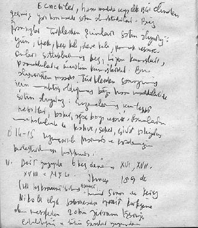

DEVLET İCRAATINA ŞER’İ HUKUK HÂKİM OLUR
İzledikleri dinsel siyasete karşın, Büyük Selçuk İmparatoru ve halefleri zamanında eski Türk devlet teşkilatından ve örfi kaza normlarından birçok şey İslam hukukuna göre yasaktır. Moğol istilası birçok Türk-İslam devletlerinde milli geleneklerin daha fazla nüfuz ve önem kazanmasına neden olur. Moğollar ve Timurlular döneminde Türk ulusal devlet teşkilatının ve “yasanın” şeriattan ve İslami denilen devlet nizamlarından ayrı olarak egemen olduğu görülür. Bu devletlerde şer’i öşür ve zekât ile uzlaşan gayri İslami, Türk ve Moğol vergileri ile birlikte şeraite tamamıyla aykırı olan vergiler de cari olur. İlhanlılar ile birlikte Selçuklu devletinin de bir devamı olacak olan Osmanlı İmparatorluğu’nun kurulduğu yerlerdeki mali ve idari sistemlerde ise eski Türk devlet geleneklerinin kuvvetle hükümran olduğu gün geçtikçe daha fazla anlaşılmakta olan bir gerçektir.288
Örf ve âdet hukuk yapısı olarak Sultan’ın hüküm ve icra otoritesidir. Bugünkü anlamıyla örf ve âdet, yani içtimai ilişkileri düzenleyen kanunlaşmamış kurallar, daha çok, adet ve örf-i tarif ile ifade edilir. Ehl-i örf, Sultan’ın icra otoritesini temsil eder, ulema sınıfı dışındaki unsurdur. Örfi Kanun, şer’i kaynak ve prensiplerin dışında, sırf sultan iradesine dayalı kanundur. Bu örfü âdet önce yapılır, sonra kanunlaştırılır. Şer’i otorite yanında ondan bağımsız siyasi ve icrai otoritenin çıkışı, Selçuklunun İslam dünyasına egemenliğiyle vuku bulur. Osmanlılarda ilk iki asırda örfi-sultani hukuk kuvvetle devam eder, daha sonra şer’i hukuk devletin her türlü icraatına hâkim olur ki, bunu en iyi şeyhülislamların her çeşit devlet kararı için fetva vermesi ile ortaya koyar.289
Kanunname, Osmanlı İmparatorluğu’nda şer’i hukukun yanında idari, mali, cezai, çeşitli hukuk alanlarına ait olmak üzere padişahların emir ve fermanlarıyla konmuş olan kanun ve nizamları bir araya toplayan mecmualar veya bu kanunlardan belirli bir zümre veya alana ait olanlardan birine denir. Bazen kanun yerine “yasa” veya “yasak” ve kanunname yerine de “yasak-name” deyiminin kullanıldığı olur. Osmanlı İmparatorluğu’nda genellikle “kamu hukuku” kuralları ve özellikle idare ve teşkilata ait olan nizamlarla bazı ceza işleri, doğrudan doğruya padişahların emir ve fermanlarının bir araya getirilmiş kanunnameler ile idare edilir. “Özel hukuk” alanı ve bu arada özellikle miras gibi bazı kişisel hukuk ve mali ilişkileri ilgilendiren medeni hukuk konuları şeklen ve resmen esaslarını mutlak biçiminde fıkıh kitaplarında bulan şeriat hükümlerine bağlı kalmaktadır.290
ŞERİATIN ÖRF VE ÂDETİ SINIRLAR
Bayazıt II’den itibaren Osmanlı padişahının hükümdarlık ve devlet telakkisi şeriata gittikçe daha uygun bir hale getirilmeye çalışılır, örfi tasarrufları daha ziyade sınırlandırılır. XVIII. yüzyılda Osmanlı, bilinen Abbasi hilafet anlayışını canlandırır ve padişah bütün Müslümanların tek meşru halifesi olarak görülmeye başlanır. Bu görüş 1876 Anayasası’nın maddelerine yansır: “Bütün Osmanlıların hükümdarı, bütün Müslümanların halifesi” “Zat-ı Hazreti Padişahî hasb’l-hilafe din-i mübin ve İslamın hamisi ve bilcümle tebaa-i Osmaniyenin hükümdarı ve Padişahıdır.”
Padişah, ilk yüzyıllarda örfi sahada geniş yetkiye sahiptir. Gerileme döneminde şeriat, örfi hâkimiyet sahasını gitikçe daraltır. Yavuz Selim, Şeyhülislam Ali Cemali Efendi’nin divana gelip, devlet işlerine karışmasını protesto ettiği halde XVIII. yüzyılda her türlü önemli devlet işi için şeyhülislamdan fetva alınmasına lüzum görülüyordu. Şeyhülislam mühim devlet işlerinin görüşüldüğü meclislere başkanlık etmekte idi. Hatta XVII. yüzyıldan itibaren, padişahların şeriata aykırı hareket ettiklerine dair şeyhülislam tarafından verilen fetvalarla tahttan indirildikleri bilinir.
Selim III’ün halli için Şeyhülislam Ataullah Efendinin verdiği fetvada, onun, “saltanat tahtında istiklalini kaybettiği, başkalarına alet olduğu, Müslümanlara karşı hareket ettiği için, hilafete layık olmadığı belirtilmiştir.”291
SELİM II SEFERE KATILMAYAN İLK PADİŞAH
Selim II (saltanatı: 1566-1574) 1542’de Konya Sancakbeyi, 1544’te Manisa, Konya ve Kütahya’dadır.
Selim Sokullu’nun mektubunu alınca İstanbul’a gelip tahta oturur, üç gün sonra da babası Kanuni’nin cenazesini almak için ordugâhın bulunduğu Belgrad’a gider, orada padişahlığı ilan edilir.
Tahta çıkınca atlı bölüğe bin, yeniçeriye 2 bin akçe verir. Yeniçeri bunu az bulur. Selim’in yolunu keser. Yeniden biner akçe tevzi edilir.
Öte yandan Selim’in Şehzade Bayazıt ile yaptığı Konya Savaşı’ndan önce kapıkulluğu vaadi ile ulufeye yazmış olduğu “eski yevmlulerden” 8 bin kadarı Anadolu’dan, İstanbul’a akın ederek, hizmetlerinin ödülünü isterler. Sadrazam’a saldırırlar. Elebaşılarını öldürmek, geri kalanına da tımarlar vermek gerekir.
Devlet yönetiminde Sokullu Mehmet Paşa, Ebussuud Efendi, Nişancı Celalzade Mustafa gibi eski rical vardır. Selim II’nin devlet idaresini bıraktığı kayınpederi Sokullu “Padişah-ı manevi” durumundadır. Sokullu’nun adı doğduğu Bosna’nın Sokoloviç köyünün kelimesindeki “sokol”, şahin anlamına gelir. Şahinoğlu adlı ailesinden 15-16 yaşında devşirilir.292
Sokullu 1569’da kapitülasyonları yenileyerek Fransa’yı ihya eder.
Selim II hiç sefere katılmayan ilk Osmanlı padişahıdır. Şerafettin Turan “Selim II’nin haremini dolduran kadınların çokluğu yüzünden, sarayda birçok yabancı diller konuşulur olmuştur,” der.293
Beylerbeylerinin ağır teklifleri gerekçesiyle Basra yöresinde 1567’de isyan eden Alayyan oğlu merkezden yeniçeri gönderilip cezalandırılır.
Yemen’de isyan çıkar. 1550’de Zeydiyye ailesinden İmam Mutahhar’a imtiyazlar verilir. San’a Beylerbeyi Rıdvan Paşa imtiyazı geri almaya kalkınca, 1566’da isyan çıkarır. Rıdvan yenilir. İmtiyazın büyük kısmını ona verip anlaşır. Babıâli anlaşmayı reddeder, Rıdvan Paşa’yı azleder. Mutahhar Zabid, Beylerbeyi Murat Paşa’yı esir alır. San’a’yı alır ve hutbe okutur.
1567’de Serdar Lala Mustafa Paşa azledilir. 1568’de yerine gelen Sırrı Paşa İskenderiye kazasından Kurdoğlu Hızır’ı Aden’e yollar, Aden alınır. Mutahhar’a boyun eğdirilir. Kendisine bir arpalık verilir. San’a ve Zabid beylerbeylikleri birleştirilir. Bütün bedevi Arap reislerinin daimi beylerbeyinin yanında bulunmaları şart koşularak Yemen ikinci kez fethedilir.
KARADENİZ-HAZAR KANALI PROJESİ
Don ve Volga nehirleri arasında açılacak bir kanalla Karadeniz’i Hazar Denizi ile birleştirme düşüncesi Sokullu Mehmet Paşa tarafından Kanuni’nin son yıllarında (1563’te) önerilir. Bununla hem Safevileri kıskaç altına almak, hem de Rusların Karadeniz’e ve Kafkaslar’a inmesine engel olmak amaçlanır, ama girişilemez.
Hive Hanı’nın Selim II’ye Astrakhan’ın Ruslardan geri alınıp hac yolunun açılması ricası üzerine Sokullu’nun Don kanalı projesi bu kez uygulamaya konulur. Kırım Hanı Devlet Giray’ın da katkısıyla 1569 Ağustos başında 6 bin işçi ve asker kanal kazmaya başlar. Altı deniz mili olarak hesaplanan kanalın üçte biri kazılmışken, dar yeri olan Perevolokh’da bırakılmak zorunda kalınır. Proje stratejik bakımdan sağlam olduğu halde, lojistik ve taktik bakımdan başarısızlığa uğrar. Köstence ve Astrakhan’a saldırılmak istenir, o da başarısız olur. Harekât üslerinden bu kadar uzakta, kuzeyde, Osmanlıların Ruslarla başarılı savaşamayacağı anlaşılır.294
KIBRIS’IN FETHİ ve İNEBAHTI HEZİMETİ
Doğu Akdeniz’de Osmanlı egemenliğinin kesinleşmesi için Venediklilerin elinde bulunan Kıbrıs’ın fethi zorunlu görülür. Zaten Kıbrıs halkından da bu yönde talepler vardır. Bu fethe zorlayanlardan biri de Selim II’nin yakınlarından olan ve Nakşe (Naksos) adası dükalığı verilmiş olan Joseph Nassi’dir. Avrupa devletlerinin ittifakından çekinen Sokullu’nun muhalefetine rağmen ve Ebussuud Efendi’den de fetva alınarak Venedik’e savaş ilan edilir.295Kıbrıs 13 ayda fethedilir, Anadolu’dan İçel, Tarsus ve Kozan sancaklarının eklenmesiyle beylerbeylik haline getirilir.
İspanya Kralı Karl V’in (Şarlken veya Carlos) gayrimeşru oğlu Don Juan komutasındaki müttefikler İnebahtı’da Osmanlı donanmasını çok ağır bir yenilgiye uğratırlar.296 Ama Osmanlı, Uluç Ali’nin İnebahtı’dan kurtarıp getirdikleriyle beraber 250 gemilik bir donanmayı çok kısa bir sürede yeniden inşa eder. Sonradan Selim II tarafından Uluç yerine “Kılıç” adı verilen Ali Paşa Kaptanı Derya olur.
Kıbrıs’ın fethi, Sokullu’nun çekindiği gibi haçlı ittifakına neden olur. Ancak Selim II Batı Akdeniz’de de ilerleme yanlısıdır. İspanya ile savaşır. 1573’te Don Juan Tunus’u alır. 1574’te Osmanlı geri alır. İlerler. Fas’ta Osmanlı’nın desteklediği aile Fez’i alır. 1576’da Osmanlı’ya hutbe okunur, para basılır.
Selim II döneminde, İstanbul’da mali işlerde Yahudilerin etkisi görülmeye başlar. Portekizli Yahudi Ronna Mendes İstanbul’da Avrupa mali merkezleriyle bono ve poliçe teati eden bir cins banka kurar, aynı zamanda yeğeni olan damadı Joseph Nassi ise saraya sokulur. Büyük mali yolsuzluklara girişilir. Nakşe dukalığını almıştır ama İstanbul’da oturmaktadır. Nassi ve Mendes’in zararlı faaliyetleri Türk altınının Avrupa piyasalarına geniş olarak intikaline yol açar. Böylece altın/gümüş oranı gümüş aleyhine bozulur.
1574’te ölen Selim II’nin sağlığında şehzadelerin sancağa çıkışında değişiklik yapılır: Yalnız en büyük şehzadeye sancak verilecektir. Manisa, veliaht-şehzade sancağıdır. Babalarının türbesine defnedilirler. Selim’in dört kızı dört paşayla, Sokullu, Piyale, Zal Mahmud ve Siyavuş Paşalarla evlenir.
İRAN-DOĞU MESELELERİ
Murat III (saltanatı: 1574-1595): Selim’in ölümü üzerine Sokullu’nun davetiyle Manisa’dan gelen büyük oğlu Murat tahta çıkar. Selim II’nin Mehmet, Süleyman, Mustafa, Cihangir ve Abdullah adlarındaki henüz sancağa çıkmamış beş oğlu, ağabeyleri Murat’ın cülus ettiği gün katledilir.297
1576’da Gilan’dan dönen Türk kervanı Zengan’da basılıp tacirler öldürülür veya esir edilir. Tahkike gönderilen çavuşlar tutuklanır. Ardından hapisten kaçan Şahkuluoğlu Gazi’ye Şah Osmanlı arazisi ve Selemas sancağını verir. İmadiye egemeni Kubad Bey’in kardeşi Behram Bey iltica edince Tebriz’de törenle karşılanır. Oysa ahidnameye göre firariler tutuklanarak geri yollanmalıdır. Buna rağmen firariler artar. Anadolu Alevileri üzerine tahrikler çoğalır. Şah İsmail II, Osmanlı hudut beylerini celp ve teşvik eder. İsmail II ölünce karışıklık çıkar. Osmanlı bundan yararlanmak ister.
1578’de sınır beylerine İran’a akın emri verilir. Fakat Tokmak Han misilleme yapar diye tehir edilir. Özellikle valide Nurbanu Sultan ile Murat III’ün eşi Safiye Sultan arasındaki harem entrikaları yüzünden Sokullu’nun nüfuzu hayli azalır. Murat III’ün İran seferine karşı çıkar; askerin şımaracağı, masraflar artarak reayanın vergiden ve askerin tecavüzünden ezileceği, İran fethedilse bile halkının Osmanlı’ya tabi olmak istemeyeceği, Kanuni devrinde o tarafa düzenlenen seferlerde çekilen zahmetler gibi nedenleri sayar, ancak uyarıları dikkate alınmaz. 1579’da kendi sarayındaki bir ikindi divan toplantısını yönetmekte olan Sokullu’yu tımarının azalmasından zarar görmüş olan bir Boşnak hançerleyerek öldürür. Vukiceviç Sokullu’nun servetini 18 milyon altın olarak kaydeder, günde 20 altın aldığını söyler.298
Hakkâri egemeni Zeynel Bey’e ecdadının kadim ülkesi Selemas’ı zaptları tekid olunur. Baradas Beyi Hasan, Urmiye’yi, Sınır beyleri Hoy, Urmiye ve Selemas’ı alır. Sünni Şirvanlılar, Şii saldırılarına yardım isterler. Lala Mustafa Paşa, Gürcistan üzerinden Şirvan fethine çıkar.
Ağustos 1578’de Çıldır Savaşı kazanılarak Gürcistan kapıları açılır. Tebriz Valisi Türkmen Emir Han ve Şirvan Valisi Rumlu Aras Han yenilir. Çeşitli savaşlar ve yağma yapılır. Zahire sıkıntısı ortaya çıkar. Aras Han, Ereş’i alıp Sünni halkı kılıçtan geçirir, öteki Şirvan şehirlerini yağmalar. Şemahi kuşatılmışken Kırımlı Adil Giray kuvvetleri Aras Han’ı yener. Ancak Adil Giray, Özdemiroğlu Osman Paşa’nın yardımına giderken Aras tarafından esir alınır. Dulkadirli Muhammed Halife Hacılar Şahın Şirvan Valisi atanır. Hüsrev Paşa, Van-Tebriz arasındaki bölgeyi yağmalar. Kırımlı Mehmet Giray, Halife Hacıları yenip esir alır. Özdemiroğlu Osman Paşa ile birlikte Şemah’a girer. Şiiler her yönden imha olunur. Kür Nehri aşılarak Karabağ, Mugan Kızılağaç’a kalır. Kuzey Azerbaycan yağma ve tahrip olunur. Mehmet Giray ısrara rağmen kalmaz, Kırım’a döner. Safeviler Şirvan’a girer, tutunamaz, çekilirler.
İran Valisi Kuman Hâkimi Türkmen İbrahim Han 1581’de İstanbul’a gelir ve “Şirvan’ı veremeyiz, haraç verelim” der. Şahlık davasında bulunup Osmanlı devletine itaat eden Kalender ve Özbek Hanı ile İran tehdit edilir. Ama Safeviler ilerler. Özdemiroğlu Osman askere ulufe ve yiyecek veremez. Dağıstanlılar da Osmanlı’dan yüz çevirir. Erzurum’dan Tiflis’e gönderilen ikmal ve takviye kafilesi basılır, hazine ve zahire alınır.
Osmanlı, Şirvan zaptından vazgeçmez. Özdemiroğlu Osman Paşa’ya Kefe’den kuvvet gönderilir. 20 bin kişilik ordu meydana gelir. Bunu tehlikeli gören yerli melikler birleşerek Osmanlı ordusuna karşı savaşır. Ama Özdemiroğlu, 1583’teki “Meşale Savaşı”nda İmam Kulu Han’ı yener. Üç gün süren savaş geceleri iki tarafın meşale yakarak çarpışmayı sürdürmeleri nedeniyle bu adla anılır. Şirvan egemenliği kesinleşir.
MEHMET GİRAY’IN KATLİ
Murat III, İran seferinde gevşek davranan Kırım Hanı Mehmet Giray’ın katlini emreder. Bunu duyan Mehmet Giray, Kefe üstüne yürür. Kırım’da savaşılarak Mehmet Giray indirilir ve öldürülür. İslam Giray başa geçirilir. Bu başarıdan sonra Özdemiroğlu Osman ikinci vezir olarak divana girer.
1585’te Sufiyan ve Alivar’da İran’la iki savaş yapılır. Tebriz’e girilir. Ama sonra Safevi başarıları görülür. Tebriz’i 11 ay kuşatırlar, sonuç alamazlar. 1590’da barış olur.299
Avusturya ile barış sürdürülür. Yalnızca sınır akınları düzenlenir. Bosna Beylerbeyi sınır eşkıyası Uskoklardan şikâyetçidir; tedip için Hırvatistan’a akın düzenlenir. Nadasdi’yi yener, ama Avusturya kuvvetleri toplanır. Bosna Beylerbeyi yenilir.
İkinci vezir Ferhad Paşa, Şeyhülislam ve has efendiler savaşa muhaliftir. Koca Sinan Paşa’nın ısrarı ile Avusturya’ya savaş açılır. Oysa 1590’da barış 8 yıl uzatılmıştır. 30 bin duka alınır, ayrıca sınır beyleri alıyor. Zahmetli ve verimsiz savaşlar yapılır. Yengi ve yenilgiler görülür. Birçok kale karşılıklı olarak kuşatılır.
Avusturya Savaşı kuzeydeki tabi beyliklerin 1594’te Türkler aleyhine teşekkül eden mukaddes ittifaka geçerek, Avusturya safında yer almalarına zemin hazırlar.
TIMAR SİSTEMİNİN YOZLAŞMASI
Tımar sistemi XVI. yüzyıl sonlarına doğru büsbütün yozlaşır. Murat III’ten itibaren bozulma başlar, sadrazam ve serdar kişiler “eskiden büyük bir hikmet ile vazolmuş” bulunan kanunları ihmal ederek “rüşvet sebebiyle” tımar sahiplerini gelişigüzel azleder.
Paranın değeri düşmüştür. Sipahinin mali durumu bozulur. Tımar geliri sabittir. Gelir azalınca sefere gidemez, gidemeyince tımarı elinden alınır, kimiyse kendiliğinden tımarını bırakır. Terk edilen tımarlar yeniçerilere, nüfuzlu kapıkullarına ve saray erkânına geçer. Rüşvetle illegal tımar alan reaya vardır.300Kanuni ve Selim II yeniçerilerin evlenme yasağını gevşetirler. Evlenenler, oğulları yeniçeri olsun baskısı altındadırlar. Öteki köleler ise oğullarına mevki isterler. Çoluk çocuğa karışan yeniçeriler artık uzak yerlere sürekli seferlere istekli değillerdir. Onun yerine ticaret ve zenaatla bağlantılar ararlar.
Dönemin birçok yazarı Osmanlı’nın inhitatını (gerileme) Murat III’ten başlatırlar.301Hammer ise gerilemenin aslında Selim II döneminde başladığını, Sokullu Mehmet Paşa’nın başarılı yönetimi sayesinde o dönemde görülemediğini, Sokullu’nun nüfuzunun kalkmasından sonra anlaşıldığını yazar.302
Saray mensuplarının rüşvet alarak mansupları (atanmış mirasçılar) ehli olmayanlara geçirmeleri ve sık sık tebdiller görülür. Seferlere para bulmakta güçlük çekilir. Magşuş (bakır karıştırılarak gümüş değeri düşürülmüş ) sikke bastırılır. Sipahi ve çiftbozan kapıkulu zümresine katılır. Sipahiler, kendilerine değeri düşük akçe verilince 1589’da tarihe “Beylerbeyi Vakası” adıyla geçen olayda Rumeli Beylerbeyi Mehmet Paşa’nın başını isterler ve alırlar. Eksik akçe sipahi karışıklıklarına yol açmaya devam eder.
Büyük yangın çıkar. Yangınlarda halka yardımcı olan ve eşya kurtaran yeniçeri bu kez yağmaya dalar. 1591’de iki yeniçeri isyanı çıkar. 1593’te ulufe alamayan sipahi isyan eder.
Murat III müsadereye meraklıdır. Çevresinin telkinleriyle Müneccim Taküyiddin (yabancı dillerde Taqi al-din) rasathanesini yıktırır. Sakarya-İzmit kanalının açılmasını engeller.
Murat III, İstanbul’dan hiç ayrılmayan ilk padişahtır. Cariyelerinin ve çocuklarının sayısı hakkında çeşitli söylentiler çıkmıştır, öldüğü zaman 49 çocuğunun hayatta olduğu, cariyelerinden 7’sinin hamile olduğu anlaşılmaktadır.303Hammer “Harem eğlencelerinde o kadar az itidal gösterdi ki hasekilerin sayısı kırka, çocuklarının sayısı yüze, cariyelerinin sayısı beş yüze çıkmış, cariye fiyatı İstanbul’da yüz misline çıkmıştı,” der.304Ölünce, 19 şehzadesi boğdurulmuştur. 800 yük akçe borcu çıkar, Enderun hazinesinden ödenir.
MEHMET III ON DOKUZ KARDEŞİNİ ÖLDÜRTÜR
Mehmet III (saltanatı: 1595-1603) Murat III’ün Venedikli Sofia Baffo’dan (Safiye Sultan) doğan oğludur. Babası ona 1582’de muazzam bir sünnet bir düğünü yapar, 50 yük akçe harcar. Sünnete Alman İmparatoru, Gürcistan ve hatta Hint hükümdarları bile davet edilir. Hammer’e göre sünnetin hazırlığı bir yıl alır, hazineden yarım milyon harcanır, eğlenceler 1 Haziran’da başlar, Mehmet 7 Temmuz’da sünnet edilir.305Şehzade Mehmet sünnetten bir yıl sonra 3,2 milyon akçelik haslar ile Manisa sancağına gider. Babasının ölümü kendisine validesi Safiye Sultan ile Bostancıbaşı Ferhat Ağa tarafından bildirilince Amasya’dan gelip tahta çıkar. Babasının cenaze merasiminin hemen ardından 19 kardeşini idam ettirir. Yeniçeriye 660 bin altın cülus ve terakki dağıtır.306
Tuna beyliklerine ve Avusturya’ya sefere çıkacak olan Sadrazam Ferhat Paşa sipahi isyanı kışkırttığı gerekçesiyle azledilir ve idam edilir.
Onun yerine gelen Koca Sinan Paşa’nın seferi başarısız olur ve Estergon ile Vişegrad kaleleri yitirilir.
1595’te Budin, Temeşvar, Bosna gibi beylerbeyleri ve Estergon’a yardım ferman edilir. İstanbul, Galata ve Üsküdar kadıları hanlarda bulunan dirliğe mutasarrıf herkesin defter edilerek sevk olmasına, firariler varsa idamlarına hüküm verir.
Padişah ısrarla sefere çıkar. Hoca Saadettin cihadın fazileti olduğunu söyler. Eğri seferi ve Haçova Meydan Muharebesi 1596’da yapılır. Eğri fatihi olur. Haçova Meydan Savaşı kazanılır. Yararlılığı görülen Cığalazade Sinan Paşa sadrazam yapılır. Savaşın ertesi günü askeri yoklar. İdam, dirlik zaptı, firarilerin mal ve mülküne müsadere gibi uygulamalarda bulunur. Sefere gelmezse Gazi Giray’ın azli tedbirleri nedeniyle, İstanbul’a dönünce azleder.
Tebriz eyaletinde bazı ümeraya sancak verildiği halde çoğunun gitmemesi, giden bir kısmının da adam bulundurmaması savunmayı bozar.
Eski Tebriz Beylerbeyi Hızır Paşa ve adamları her köyden 1000-1500 akçeyi zulümle toplar. Padişah has reayası bundan şikâyetçidir.
Asker ulufesi verilememektedir, Diyarbakır’dan para tahsis edilir ancak yolda eşkıya bunu gasp eder.
Dizimar sancağı kalelerinden biri İranlı ve Kürt eşkıyalar tarafından yağmalanır. Sancakbeyi katledilir.
1598’de Sadrazam Hadım Hasan Paşa (Her mansıbı imakamı akçeyle satıp âlemi birbirine katarmış, Kâtip Çelebi) Rumeli kadılarına ferman gönderir: “İlkbaharda yapılacak seferde bütün mazul zeamet ve tımar erbabı ve ‘yevmlu’ adlı garip yiğitlerin tam teçhizatlarıyla serdara katılmaları…” Yanık Kale yitirilir. Budin kuşatılır. Niğbolu Mihal’e verilmez.
İŞADAMI VASFINDAKİ TIMAR SAHİPLERİ
Ayn-ı Ali Efendi’nin Kavânîn-i Âl-i Osman der Hülâsa-i Mezâmin-i Defter-i Dîvân’ın önsözünde zeamet ve tımarda “külli ihtilal” olduğunu söyler. İş o kadar çığırından çıkar ve her türlü yolsuzluk o kadar doğal hale gelir ki “reforma girişecek bir defter emininin, yeni nizamdan çıkarı olanlar tarafından her an ‘kanun bilmez’ birtakım sert icraat ile Müslümanlara zulmeden bir yönetici olarak suçlanması ve iftiraya uğraması mümkündür” der.
Bu kaygıyla Şeyhülislam Sunullah Efendi’nin iki fetvasını risaleye koyar. Fetvalara göre, şer’an düşmanla savaşarak askerlere tahsisi gereken tımar gelirlerini bu hizmeti bilfiil yapanların elinden alıp hakkı olana veren kimse “müminlerin rızkını kestirdi, günahkâr oldu, dünya ve ahirette cezasını çekecektir” diye suçlanamaz. Aksine bu hususu ihmal ve müsamaha ile karşılayan devlet memurları şeriata göre “günahkâr ve hain” olarak görülür.
Risaleye göre Rumeli eyaleti 22 sancaktır. Cebelularıyla birlikte 33 bin kişilik sipahi ordusu olmalıdır. Sefere eşenlerin sayısı 2 bini aşmaz! Anadolu Beylerbeyi’nin seferine 18 bin 700 kişi gerekirken 1000 sipahi gelir. Rakamlara inanmak güçtür ama ısrarla bunlar yazılır.
Risaleye göre bozulma nedenleri şunlardır:
-Tımar kayıtlarının son derece karışık hale düşmesi. Tımar sahiplerinin seferde yapılması gereken yoklamaları yapmaması. Oysa yeni defterlerin hazırlanması gerekir.
-Boş kalan tımarların hakları olanlara verilmek yerine, hileli yoldan nüfuzlu kişilerin adamlarına verilmesi.
-İşadamı vasfındaki yeni tımar sahiplerinin “sefer zahmetinden baş ve can korkusundan halas olup, safa ve huzur içinde kâr ve kazançlarıyla” meşgul olabilmek için, savaş zamanlarında tımarlarını birtakım aracılara, seferden dönüşte bu tımarlarından eski sahiplerinin lehine feragat etmek şartıyla, devir ve tahvil ettirmenin yolunu bulması.
-Herkesin tımar bezirgânlığını sanat ve hal-i mukatelelerle ticaret etmeyi âdet edinmesi…
Ayn-ı Ali Efendi Risalesi’nden bir süre sonra yazılmış ve yazarı meçhul başka bir risale olan Kitab-ı Müstetâb daha çok kapıkulu ocaklarındaki yolsuzluklara önem verir ve son zamanlardaki “âleme ihtilal” ve reayaya “infial” şeklindeki bozuklukların rolünü inceler.
CELALİLİK BAŞLIYOR
1595’te Karataş kazasında tımarlı Evren’in, ertesi yıl Karaman köyünde Mehmet’in soygunculuğu ve kalp para kestirmesi görülür.
Aynı yıl, Kars Kalesi ahalisi Zalim Ali Paşa’ya karşı ayaklanır. Toplar getirtilerek tenkil edilir. Vali cezalandırılır.
Reayaya tecavüz edenler hapsedilir.
Karayazıcı Abdülhalim sekban bölükbaşısı olur. Rum eyaletine (Sivas, Tokat, Amasya) bağlı sancaklardan birinde mütesellim iken, buraya atanan başka birinin mütesellimine yerini vermez. Sancağını bizzat yönetmeye gelen sancakbeyini de çevresine topladığı çiftbozan reaya ve leventler ile Macar seferlerine katılmayarak eşkiyalık yoluna sapan sipahi kuvvetleriyle yener ve öldürür. Beylerbeyini de yener. Eski Habeş Beylerbeyi Hüseyin Paşa da mukabelen Urfa Kalesi’ni alır. Gittikçe genişler. Dirlikleri ellerinden alınanlar ile hoşnutsuzluklar başlar. Kendine Halim Şah unvanı veren Karayazıcı’ya Amasya sancağı verilerek ihata sağlanır, Hüseyin Paşa ise idam edilir.
1600’de Kanije alınır. Kanije bir beylerbeylik ve Zigetvar ile Peçuy, Siklos ve Ösek sancakları da arpalık olarak Tiryaki Hasan Paşa’ya verilir. Mehmet III, 1600’de Safiye Sultan’a yakınlığıyla sarayda nüfuz kazanan, rüşvet karşılığı memuriyet dağıtımında alet olan Kira adlı Yahudi kadını, iki oğlu ile sipahiler öldürür. Gümrük iltizamı karşılığında hazineye düşük ayarlı para verir, ulufe bu para ile ödenir.
1603’te sipahi isteğiyle ayak divanı toplanır. Devletin kötü yönetildiğini, Anadolu’nun eşkıya elinde olduğunu söylerler. Sipahi zorbaları Sadrazam Yemişçi Hasan Paşa’nın kellesini isterler. Yeniçeri ise onu destekler. Sipahi zorbaları yakalanarak öldürülür, böylece iki ocak arasında ilk kez düşmanlık ortaya çıkar.
Karayazıcı Kayseri civarında Hacı İbrahim Paşa’yı yener, taraftarlarına kendilerini bütün vergilerden muaf tuttuğuna dair hükümler gönderir. Ama Niğde kadısı, 1600’de Niğde sancağı havalisinde köyleri tahrip ettiklerini bildirir. 1602’de Sokullu Hasan Paşa, Elbistan’da yener.
1601’de kadı şikâyetleri artar, Aksaray’a Celali saldırıları başlar. İçel ve Darende’de Piri, Sarı Yakup, Kara Sinan adlı eşkıya reisleri köy ve kasabaları yağmalar.
Celali serdarı Sokullu Hasan Paşa, 20 bin eşkıyayı idam ettirir. Ama Canik dağlarında ölen Karayazıcı’nın halefi Deli Hasan; Şahverdi, Yularkıstı ve Tavil gibi eşkıya reisleri ile birleşir, Sokullu’nun Diyarbakır’a gelen ağırlığını yağmalar. Onu Tokat’ta kuşatır ve öldürür.
1603’te Deli Hasan, Bosna Beylerbeyliği’ne atanır.
1603 sonu sipahiler Padişah’tan bir ayak divanı ister. Sipahilerin reisleri Hüseyin Halife, Poyraz Osman’dır. Kâtip Cezmi “Anadolu’nun tamamen Celali elinde olduğunu, 5-6 kez üzerlerine gönderilen serdarların bir iş göremediklerini” söyler. Ricalin ihmali yüzünden bir iki kişi idam edilir. Zorbalar acele sınırdan döner. Sadrazam Yemişçi Hasan Paşa’nın idamı için müftüden fetva alır. Kazaskerler fetvayı imzalar. Padişah olmaz der. Yeniçeri desteğini arar. Ancak idam gerçekleşir.
1603’te Rumeli’de başarısızlıklar görülür, İranlılarla savaş başlar.
Selmas’taki Kürt beylerinden Gazi Bey’in bir kısım arazisinin, Karnıyarık Kalesi ve bölgesinin miriye tahsis edilmesi, Tebriz kulunun ocaklığı olması ve bu yüzden vuku bulan tecavüzler nedeniyle isyan ederek Şah Abbas’a sığınması, Osmanlı-İran savaşına neden olur.
Tebriz Beylerbeyi Zincirkıran Ali Paşa, Gazi Bey İsyanı’nı bastırmaya çalışır. Şah Abbas ona katılan Erdebil Hâkimi Zülfikar Han ile birlikte gelir, Zincirkıran’ı yener. 1603’te Tebriz’i, ardından Nahcivan’ı alır. Revan’ı kuşatır.307
Mehmet III’ün Mahmud, Ahmet ve Mustafa adlarındaki oğulları küçük yaştadırlar. En büyükleri Mahmud on altı yaşındayken Anadolu’da Celali hareketi nedeniyle sancakbeyliğine gönderilemez. Babası aleyhine bir isyan hazırladığı haber alınması üzerine katledilir. Onun ölümünden yedi ay sonra da Mehmet III, 37 yaşında ölür. Yerine on dört yaşındaki oğlu Ahmet hükümdar olur.308
KARDEŞ KATLİ USULÜ DEĞİŞİR
Ahmet I (saltanatı: 1603-1617) tahta çıkınca kardeşi Mustafa’yı öldürtmeyerek kardeş katli yasasını ve geleneğini değiştirir. Zaten hanedanda Mustafa’dan başka şehzade yoktur. Ölünce yerine kardeşi Mustafa geçecektir ve gelenek değişecektir. İlk uygulaması büyük annesi Safiye Sultan’ı maiyetiyle birlikte eski saraya göndermek olur.
Onun döneminde Şah Abbas, Revan’ı ve Kars’ı alır. İranlılar 1605’te Serdar Çağalazade’yi yenerler. Çağalazade ölünce Gence ve Şirvan’ı, dolayısıyla uzun savaşlar sonucu elde edilen toprakları geri alırlar. Aynı yıl uzun ve güç bir kuşatmayla Estergon geri alınır.
Hammer’e göre Osmanlı tarihçileri aynı yılı tütünün ilk ortaya çıktığı yıl olarak gösterirler. Elli yıl içinde kahve ve tütün kullanımı Türkiye’de öyle bir yayılır ki, Avrupa’da bu iki şeyle Türk kavramı birleştirilir.309
Avusturya ile 1606’da yapılan Jitvatorok (Zitvatorok) Anlaşması’na göre “Kral” yerine “Roma Çasarı” (imparator) denecek, Padişah ile İmparator eşit olacaktır.
1611’da İran’la barış anlaşması yapılır. Ancak 1615’te yine sefere çıkılır. Ahmet I’in Mahpeyker’den, ünlü ismiyle Kösem Sultan’dan Murat, Süleyman, Kasım ve İbrahim adında dört oğlu olur.
SULTANLIK İKİ KEZ EL DEĞİŞTİRİR
Ahmet I 1617’de ölünce çocukları küçük olduklarından gelenekte değişiklik yapılıp kardeşi Mustafa I (saltanatı, ilki: 1617-1618, ikincisi: 1622-1623) sultan olur. Kızlarağası Mustafa Ağa akli dengesi bozuk diye cülusa karşı çıkar. Şeyhülislam Esad Efendi ile Kaymakam Sofu Mehmet Paşa ise yaşça büyük şehzade var iken küçük çocuğun çıkmasını doğru bulmaz. “Akıl bozukluğu, ölüm tehdidi altında uzun hapis yıllarının sonucudur, düzelir” derler ancak düzelmez. Vakitli vakitsiz sokağa çıkıp para dağıtır, divan esnasında vezirlerin başını açar. Hatta Kâtip Çelebi onun balıklara altın attığını yazar.
Şubat 1618’de ulufe krizi için kapıkulu ve divan erkânı sarayda toplanmış iken Ahmet I’in oğlu 19 yaşındaki Osman II (Genç Osman, saltanatı: 1618-1622) tahta çıkarılır. Sadece 3 ay saltanat sürebilmiş olan Mustafa I, Osman II’nin saltanatı süresince dört yıl Topkapı sarayında mahpus tutulur. Osman II zamanında İran’da ve Lehistan’da savaşlar devam eder. Leh ordusunun Dinyester nehrini geçerken imha edilmesi Osman’ın şöhret kazanma arzusunu artırır.
Genç Osman, 1621’de Lehistan seferine çıkmadan önce kardeşi Mehmet’i öldürtür. Lehistan’da kesin bir başarı sağlanamaz, aleyhte şartlarla ön anlaşma imzalanır. İstanbul’a dönünce zafer kazanılmış gibi şenlik yapılsa da Osman başarısızlığın nedeninin yeniçerilerin iyice disiplinden çıkması olduğunun farkındadır. Suriye’de yeni bir ordu kurup yeniçeri ocağını ortadan kaldırmayı düşünür. Hacca gitmek bahanesiyle Üsküdar’a geçmek üzere hazırlıklar yapılırken yeniçeriler ayaklanır.310Halktan ve ulemadan da katılımlarla isyan büyür. Osman II, Sadrazamı ve Süleyman Ağa’yı teslim etse de isyancılar Mustafa I’in hapis olduğu dairenin kubbesini delip onu çıkartırlar, 3 gündür susuz olduğu görülür. Şeyhülislam Esad ellerinden almaya gelince de olaylar çıkar. Osman, Mustafa’yı almak için ilmiye reislerini yollar ancak yeniçeri direnir.
Osman II, Yedikule’de katledilir. Mustafa I tekrar tahta çıkarılır. Sadrazamı Davud Paşa, Şehzade Murat’ı öldürmek istemesi üzerine yeniden karışıklık çıkar. Genç Osman’ın katline tepki olarak Antep’te yeniçeri katli gerçekleşir, Bağdat’ta Bekir Subaşı’nın zorbalığı, Erzurum’da Abaza Mehmet Paşa’nın yeniçeri düşmanlığı görülür. İstanbul’da yeniçeriler temize çıkmak için harekete geçer. Davud Paşa öldürülür. Mere Hüseyin Paşa yeniçerileri kışkırtıp sadrazam olur. Hüseyin Paşa ilmiyeden birine hakaret edince ilmiye, Fatih Camii’nde toplanır. Padişah tahttan indirilir, Valide Sultan öldürülmemek koşuluyla halle razı olur. Sadrazam Kemankeş Ali Paşa (okçuluktaki yeteneği nedeniyle bu adı almıştır) ile Şeyhülislam Yahya Efendi ve olasılıkla Kösem Sultan’ın gayretiyle Mustafa indirilir, yerine Şehzade Murat tahta çıkarılır. Mustafa, 16 yıl hapiste kalır. 1639’da ölür, eceliyle mi ölür yoksa öldürülür mü bilinmez.
Bu dönemde hoşnutsuzluk yaratan bir diğer etken de vakıf mallarına bakma görevinin ilmiye ricalinden alınıp sipahilere verilmesidir.
“ZİKRİ BİLE MÜSTEHCEN” İŞRET, SEFAHAT, REZALET
Murat IV (saltanatı 1623-1640) Ahmet I’in, Kösem Sultan’dan 1612’de doğan oğludur. 11 yaşında tahta çıkar, 5 gün sonra sünnet edilir. Asker önce cülus bahşişi alamaz. Devlet yönetimine Kösem Sultan vesayeti egemen olur. Murat IV, 1632’de fiilen yönetimi alır, asker sözünden döner, bahşiş alır. Sadrazam Kemankeş Ali Paşa iç hazinedeki altınlardan para kestirerek bunu karşılar.
Bağdat Valisi Bekir Subaşı, İran tabiyetini kabul eder, ama Bağdat’ta bırakılır. Abaza Mehmet Paşa İsyanı çıkar. 1626’da Bağdat kuşatması başarısız olur. Abaza’yı Bosna Beylerbeyi olarak atar. Kemankeş Ali Paşa azledilip öldürüldükten sonra Sadrazam olan Hüsrev Paşa Anadolu’da dehşet saçarak ilerler. Koca Durmuş Bey, Karaman Beyi Magrav Paşa öldürülür. 1630’da Bağdat’ı kuşatır ancak alamaz. İranlılar Şehrizar’a yürür ve yıkar. Halkı kılıçtan geçirir. Hüsrev Paşa azledilir.
Avrupa’daki mezhep çatışmaları İstanbul’a da sıçrar, Osmanlı hükümeti Cizvit matbaasını kapatır, Protestanları destekleyerek Cizvitleri Sakız’a sürer.
1627’de Almanya ile 25 yıl sürecek bir barış dönemi başlar. 1625’te ayaklanmalar görülür. Vezirler asker tahrikiyle kelle alırlar. Karesi’de hükümet kuvvetlerini dağıtan Cennetoğlu Manisa’da asılır.
Asker azledilmiş olan Hüsrev Paşa’yı tutar. Diyarbakır’da ulufe ödemesinde gecikme bahanesiyle isyan çıkar. Çarşı ve mahalle yağma edilir. Eyalet sipahileri, özellikle Beyşehir, Seydişehir, Darende, Konya, Eskişehir, İskilip gibi yerlerdeki zorbalar, eski sadrazamın makamına iadesi hususunda anlaşma yapar. Divan-ı hümayun kararı ile bunlar İstanbul’a çağrılırlar. Kurşunlu Hanı ve öteki yerlere yerleşirler ve İstanbul’daki olaylara karışmaya hazırlanırlar.
7 Şubat 1632’te üç gün arayla saraya giderek en yakınlarından 17 kişinin kellesini isterler. Teslim edilen Sadrazam Hafız Paşa asiler tarafından öldürülür. Askeri kışkırtan Recep Paşa 1632’de sadrazam olur. Murat IV, olaylara adı karışan Anadolu’daki Hüsrev Paşa’yı öldürtür. Başının geldiği haberi yayılınca yeni bir isyan çıkar. Yeniden kelleler istenir. Saraya giden zorbalar Padişah’a güvenlerinin kalmadığını, Şehzadeleri (Bayazıt, Süleyman, Kasım ve İbrahim) ona emniyet edemeyeceklerini bildirirler. Onları görüştüren Recep Paşa’nın şehzadelere kefaretiyle olay önlenir. Hareket sürer, çok sayıda devlet adamı katledilip At Meydanı’ndaki ağaca asılırlar.
Yeniçeriler katıldıkları bu sipahi zorbalığı ile Padişah’ı tahttan indirmeyi düşünürler. Ama zorbalar arasında bölünme meydana gelir. Liderlerinden Rum Mehmet sadakat yanlısıdır. İstanbul’da ayaktakımı güruhları dolaşır, soygunculuk ve zengin evlerini yangın tehdidi altında haraca bağlarlar. İşret, safahat, rezalet görülür. Naima bu olaylar için “zikri müstehcendir” der.
Asilere devamlı olarak ulufeler dağıtılır. Mülazım tahririnde yeni yeni zorbabaşılar çıkar, mansıp ve hizmet isterler. Eski zorbalar bunlarla çalışır. Büyük yolsuzluk, rüşvet ve irtikâp vardır, maişetlerini ulufe ile sağlayabilenler devamlı İstanbul’a kaçmaya mecbur edilir.
MURAT IV İSYANCILARA KARŞI ŞİDDET KULLANIR
İlyas Paşa İsyanı, Saruca ve Sekban’dan başlayıp Balıkesir, Bergama, Karesi ve Manisa’da zorbalık uygular. İlyas Paşa asılır. Ama Murat, onu Recep Paşa’nın kışkırttığı kanısındadır. 1632’de “Gel bakalım Topal zorbabaşı” der ve Recep’i boğdurtur. Paşa’nın cesedi, her zamanki gibi birlikte getirdiği zorbaların önüne atılır. 20 gün şaşkınlıktan sonra sipahiler toplanarak hizmetlerinin derhal tevziini isterler. Yeni Sadrazam Tabanı Yassı Mehmet’in sipahilerin eskiden sahip olmadıkları vazifelerin verilmemesi için hattı hümayun aldığını öğrenirler. Padişah, yeniçeri zabitleri de dahil ayak divanı toplar, sipahi temsilcilerini de çağırır. “Serbestliğe son” der. İtaat yemini alır. Tenkile girişir. Sipahi Ağası Cafer ile Silahtar Ağası Ahmet’e “Elebaşıları yakala” emri verir. Acz belirten Ahmet’in boynunu vurdurur. Payitahtta ve eyalette zorbalığı ihtiyat edinenlerin avı başlar. Sadrazam tebdile bürünüp İstanbul sokaklarında dolaşır. Nerede bir “eğri sarıklı sipahi” kılıklı adam görse öldürtür. Şehir halkı ve yeniçeriye de aynı usulü uygular.
Sipahilere çeşitli adlar altında verilegelen aidatı da kestirip herkese “ulufe ile yetinin” der.
Anadolu ve Rumeli Beylerbeyliklerinde tımarların hak edenlere verilmesi için yoklama yaptırır, bunun üzerine sipahi ve yeniçerilerin birçoğu ulufelerini bırakıp tımar alırlar.
Deli İlahi adlı sipahi zorbası, Hüsrev Paşa’nın Bağdat seferinde sipahileri yürüyüşten men etmiş, Dağlar-delisi Süleyman adlı Celali’nin kardeşinin çocuğudur, onun yerine geçmiştir. Konya Bölgesi’nde zorbalık yayar. Ulufesini istemeye İstanbul’a geldiğinde öldürülür. Yerini alan Dereli Halil ve öteki sipahi asiler de öldürülür.
Yemen Zeydilerinden Kasım Muhammed, Yemen Valisi’ni kuşatır. Halep Beylerbeyini bozguna uğratır. Mısır ümerasından Kansuh Paşa’nın “Yemen kulu” sadık hükümetinin gönderdiği sipahiler ve diğer kuvvetlerin başında olduğu çarpışmalar yıllar sürer. Savaş ve iklimin erittiği inzibatsız “Yemen kulu” yanlış anlama sonucu Yemen’de iken Mekke emiri ile savaşa tutuşur, Mekke’ye hükümdar olur. Mısır Valisi Halil Paşa yollanıp, bir eşkıya güruhu halini alan bu kuvvetin zorbalığını bastırmaya çalışır, nihayet bunların bir kısmı Basra’ya diye yola çıkar. Araplarca imha edilir. Bir kısmı da 1633’te ulufe istemek için başvurdukları divanı hümayundan kovulur. Kansuh Paşa dönünce de Zeydi İmam ülkeye hâkim olur.
KAHVELER KAPATILIR, TÜTÜN İÇENLER ÖLDÜRÜLÜR
1633 yangını Naima’ya göre İstanbul’un beşte birini yakar. Bu yangın kahvehanelerde ileri geri konuşmalara yol açar. Kadızade Mehmet’in teşvikiyle kahvehane ve tütün yasağı getirilir. Kahvehaneler bu nedenle yıktırılır, ama gerekçe yeni bir yangın çıkabileceği tehlikesidir! Murat IV, tebdil gezip tütün içenleri öldürtür.
1633’te İznik kadısını astırır. Durum ulemada infial yaratır. Kösem Sultan bir ziyafette ilmiyenin bir araya gelmesini hal toplantısı sanarak Padişah’a haber verir. Şeyhülislam Ahizade Hüseyin Efendi azledilir ve Kıbrıs’a sürülür, Ahizade yoldan çevirip boğdurtulur. Murat IV şeyhülislam öldüren ilk padişah olur. Daha birçok kişinin kanı dökülür, Murat IV yakını olan Abaza Mehmet Paşa’yı ve çok sevdiği şair Nef’i’yi de öldürtür. Hammer’e göre Murat ayaklarının dibine düşen bir yıldırımı semavi bir ihtar sayarak Nef’i’yi saraydan uzaklaştırır. Rodos’ta sürgünden dönen Bayram Paşa hakkında yazdığı bir hicviye de öldürülmesine neden olur.311
İran, Gürcistan’ı istila eder, Van’a da saldırır. 1633’te Murat, Revan’a yürür. 1635’te Revan Kalesi alınır. Kalenin savunucusu Emirgûneoğlu Tahmasp Kulu Han Halep Beylerbeyi yapılır. İstanbul’a çağırılır. Kendisine Emirgân’da bahçe, Ahırkapı’da saray, Kâğıthane’de çiftlik verilir. Vezaret hasları verilir. Eğlence ve sefahat arkadaşı olur.
Murat, Revan seferinden dönünce 1635’te Şehzade Bayazıt ve Şehzade Süleyman öldürülür, 25 yaşındadırlar. Aynı yıl İran’da vurgunlar olur. Maku, Hay, Merende vurulur. Tebriz tahrip edilir. Şah Safi Revan’ı kuşatır. 1636’da İran, Osmanlı ordusunu yenerek Revan’ı alır.
1638’de Padişah, kardeşlerinden Şehzade Kasım’ı idam ettirir. Büyük bir ordu ile Bağdat’a hareket eder. Yolda Eskişehir’i haraca bağlayan ve hükümet kuvvetlerini 7-8 bin askerle yenen Ahmet’i (veya İsa) yakalatıp Konya’da astırır. Trablusşam bölgesinde Seyfoğlu Emir Ali ile Emir Assaf tenkil edilir. Bağdat alınır. Misilleme olarak binlerce kişi öldürülür. Urmiye Şeyhi Mahmud’u astırır.
17 Mayıs 1639’da İran savaşlarına son veren Kasr-ı Şirin mütarekesi sınırları esas alınır.
Bağdat eyaletinde Cesan, Bedre, Mendeli, Derne, Derteng ve Sermil’e kadar uzanan toprakları, bölgedeki Caf aşiretinin Ziyaettin ve Haruni kabileleri, Zincir Kalesi’nin batısındaki köyler, Şehrizar civarı kaleler, Ahıska, Kars, Van ve Şehrizar ile Bağdat ve Basra Havzası’ndaki kaleler, nahiyeler ve sahalar Osmanlı’ya ait olur. Mendeli’deki Der-teng’e uzanan kaleler İran’a kalır.
Evliya Çelebi, 1640’ta ölen Murat’ın çocuklarının sayısını 32 tespit etmekteyse de, 5 oğlu ve 11 kızı saptanıyor. Kızlar, paşalarla evlenir. Babasının sağlığında Süleyman, Mehmet, Aleaddin, Ahmet ve Muhammet ölür.312
HANEDANIN KIRIM’A GEÇMESİNİ
KÖSEM SULTAN ÖNLER
Murat IV öldüğünde halef olarak İbrahim’den başka kimse yoktur. Murat İbrahim’i birkaç kez öldürmek ister, ölüm döşeğindeyken hanedanın Kırım Hanı’na geçmesini bile göze alarak idam emri verir, Kösem Sultan bunu engeller. Ahmet I’in Kösem Sultan’dan olan en küçük oğlu, dört kardeşi öldürülmüş ve kendisi de uzun yıllarını hapiste geçirmiş olan İbrahim I’in (Deli İbrahim, saltanatı: 1640-1648) sultanlığı ilan edilir. Odasında korku içinde cellatları bekleyen İbrahim bu habere inanmazsa da Valide Sultan ve Sadrazam’ın ısrarıyla tahta çıkar.
Aydın ve Teke’de Kınalıoğlu İsyanı ve İstanbul üzerine yürüyen Erzurum Beylerbeyi Nasuh Paşazade Hüseyin Paşa İsyanı (1643) bastırılır.
İstanbul’da narh sıkı uygulanmamaktadır, kıtlık var denmektedir. Sadrazam Kara Mustafa Paşa 1640-44 yıllarında bütçeyi denkleştirir, 6 bin kese tasarruf yapılmasını sağlar. Yeniçeri ve sipahi sayısını azaltarak, maaşlardan tasarruf sağlayarak, vilayetlerde tahrir yaptırarak vergileri muntazam hale getirmek ister. Bu hoşnutsuzluk yaratır. Deli İbrahim Kara Mustafa Paşa’yı 1644 yılında öldürtür. Rumeli’de birçok hasları vardır. Rüşvet almadığı söylenir, ölünce bir eyer heybesinde 30 bin florisi çıkar. Arnavut devşirmesidir. Sadrazamlık Sultanzade Mehmet Paşa’ya verilir. Cinci Hoca Anadolu kazaskeri olur, Galata arpalık olarak ona verilir. Silahtar Yusuf Paşa’ya Halep vilayeti verilir. Yeni Sadrazam bu yolsuzluklara ses çıkarmaz. Bu arada İbrahim I’in dengesiz davranışları görülse de bunlar son yıllarına kadar pek dikkat çekmez.
1645’te Girit’e sefer yapılır, Hanya Silahtar Yusuf Paşa tarafından fethedilir ve 24 yıl sürecek Girit savaşları böyle başlar.
Sultanzade Mehmet Paşa ve Hanya fatihi Yusuf Paşa 1646’da idam edilir. Naima’ya göre padişah Yusuf Paşa’nın mallarına ve satılanlardan kendine gönderilen paraya önem verir. İbrahim I, Sultanzade’nin yerine gelen Salih Paşa Erdel, Boğdan, Kırım ve Lehistan ile ilişkileri düzene koyar. Ancak o da 1647’de sudan bir bahaneyle idam ettirilir. Yerine gelen Ahmet Paşa zulüm uygular. İbrahim’in kürk ve mücevher düşkünlüğü iyice artar. İsraf yüzünden yüksek memurluklar rüşvet verene satılmaya başlar. Kendisinden haraç istenen Sivas Beylerbeyi Varvar Ali Paşa “perişan reayadan vergi alamam” der. Hareketi isyan sayılır ve İbşir Paşa ile Karaman Beylerbeyi Köprülü Ali Paşa’yı idam ederler.
1648’de yeniçeri ocak ağaları ile ulema birleşerek önce Sadrazam Ahmet Paşa öldürülür. Sonra İbrahim tahttan indirilip boğdurulur. Öldürüldüğünde 4 oğlu kalmıştır. 7 yaşındaki Mehmet tahta çıkar.313
OCAK AĞALARININ DEVLETİ ELE GEÇİRMESİ
Yedi yaşında sultan olan Mehmet IV (Avcı, saltanatı: 1648-1687) İbrahim I’in oğludur, annesi Hatice Turhan Sultan’dır. Cülus bahşişi için hazinede para yoktur. İbrahim I’in gözdesi Cinci Hoca’nın serveti müsadere edilir, kendisi de öldürülür. Sadrazam Sofu Mehmet Paşa’nın Kösem Sultan’ın emirlerini yerine getirmemesi, ocak ağalarının rüşvetine engel olunamaması ve sipahi ulufelerinin geciktirilmesi “Yeni Cami olayı” denilen ve günlerce süren bir isyanın meydana gelmesine yol açar. Yeniçerilerin sipahiler ile içoğlanlarına karşı hücumu güçlükle yatıştırılır.
Bu arada Anadolu’da Haydaroğlu hükümet kuvvetlerini yener, Karahisar’ı basar. Isparta’yı yağma ettirme karşılığı para alır. Yakalanarak İstanbul’a getirilip idam edilir (Naima ve Kâtip Çelebi).
1649’da donanma Foça’da yenilgiye uğrar. “Saray” olayda ihmali olduğu gerekçesiyle Sofu Mehmet Paşa’yı öldürtüp yerine Kara Murat Paşa’yı sadrazam yapar.
İstanbul’daki sipahi tenkili Anadolu’da heyecan yaratır. Sipahilikten yetişip Niğde’ye yerleşen ve tanıdığı nüfuzlu kişiler sayesinde mansıp alıp satmaktan büyük servet sağlayan Gürcü Abdünnehi can korkusuna düşer ve avanesiyle birlikte Konya üzerine yürür. Konya sipahilerinin ve Katırcıoğlu Mehmet’in iltihakı ile güçlenir, yoldaşlarının kanını alma davasına kalkışır. İstanbul tehlikeye düşer. Üsküdar’a kuvvet yığılır, siperler kazılır. Abdünnehi, Şeyhülislam’ın azli, kendine ve adamı Kazzaz Ahmet’e birer sancak verilmesi koşuluyla çekilecektir, ama Bulgurlu’da savaşılır. Murat Paşa kazanır, Abdünnehi çekilir.
Antepli Çomar Bölükbaşı leventleri ile haydutluk yapmaya başlar. Girit’teki sipahiler, adam yollayıp zahiresizlik ve parasızlıktan çektikleri güçlükleri bildirir. Sadrazam yeniçerilerle geçinemez, ağaların devamlı müdahaleleri olur, Murat Paşa yeniçeri ağalarını kastederek “4 sadrazam olamaz” deyip, 1650’de sadaretten çekilir. Melek Ahmet Paşa gelir, ocak ağalarının tahakkümü artar.
Ocak ağalarının parasızlığa çare olmak üzere buldukları usul, yeni sağlam akçeyi, kendileri tarafından çeşitli yerlerde kestirilen veya piyasadan toplanan zayıf akçeyle değiştirmektir. Askerin ulufesininin bununla verilmesi yüzünden, İstanbul esnafı ayaklanıp Şeyhülislam Abdülaziz Efendi’yi önlerine katarak, ağaların idamını istemek için saraya gelirler. Melek Ahmet, 1651’de azledilir, yerine Siyavuş Paşa getirilir.
Mehmet IV’ün ilk yıllarında “Valide-i muazzama” diye saygı gören Kösem Sultan, “yeniçeri ocağına dayanıp, bir hükümdar gibi saltanat sürer” ve azil ve mevki dağıtımında etkili olur. Sonra çok şımarıp sefahat âlemlerine dalan ve istedikleri zaman saraya giderek Valide Sultan ile görüşebilecek serbesti elde eden ocak ağalarının nüfuzu hesaba katılmaz. Bu yoldan Kara Murat Paşa sadarete yükselir. Bektaş Ağa, İstanbul’un ticaretini avucunun içine aldığı gibi taşraya da el uzatarak azim bir servet sahibi olmuştur. Koca Muslihiddin Ağa her istediğini yaptırabilmiş, Kara Çavuş, Kethüda Bey, Sarı Kâtip gibi kimseler ile avanelerinin zorbalığı ağır bir hal almıştır. Kara Murat sadaretten istifa edip Muslihiddin de ölünce, en nüfuzlu kişi Bektaş Ağa olur. Kösem Sultan her sorunu ona danışır. Para yoktur. Ocak ağalarının askere ulufe vermek için bulduğu tedbir esnafı ayaklandırır. Ağalar topladıkları çürük parayı bedestende zorla sağlam paraya tebdil ettirir, hasıl olacak farktan ulufe verecektir. Ama esnaf İstanbul’daki bütün dükkânları kapar, Şeyhülislam Abdülaziz’i önüne düşürüp saraya gider. Ocak ağalarının idamını ister. Kösem ağaları korur ama sadaretten edilen tavsiyeye rağmen Sadrazamlık Kara Çavuş’a değil, Siyavuş Paşa’ya verilince ocakta infial yaratır. Ertesi gün yeniden gereken tedbirleri aldığından, çarşılılar bir daha toplanamaz.
TURHAN SULTAN KÖSEM SULTAN’A KARŞI
Kösem Sultan yeniçeri ocağını tutar ve can düşmanı Turhan Sultan’ı yenmek için Mehmet’i indirip yerine kardeşi Süleyman’ı geçirmeyi düşünür. Ama Kösem Sultan, Turhan Sultan’ın adamları olan Haremağaları tarafından 2 Eylül 1651’de öldürülür. Onunla birlikte yeniçeri ağaları da öldürülür. Yeniçeri ocağı ağaları katledilir. Kösem’in cariyelerinin her biri malından, azamisi 10 bin akçe nakit ve ikişer sandık eşya ile çırağ edilerek evlendirilir. Kösem’in büyük serveti vardır. Menemen, Zile, Gazze ve Ezdin’de 5 adet hassı mevcuttur. Bunlardan iltizam yoluyla yılda 250 bin riyal hasılat alır. Cinayet işlerinde Valide kethüdaları pek çok şiddet gösterir. Haslarının 300 bin kuruşu bulduğu, bu kadar haslı valide sultan görülmediği söylenir. Terekesinde hepsinin kıymeti 50 bin kuruş olan 2700 şal çıkmıştır. Valide Hanı’nı yaptırdıktan sonra büyük servet sahipleri para ve değerli eşyalarını burada saklarlar. Valide Hanı yabancıların inmesine de çok elverişlidir. Topkapı dışında da bahçesi, çok yerde evkafı vardır. Valide Hanı’nda 20 sandık florini, 50 yılda toplanmış pek çok mücevheri vardır, bunlar hazineye aktarılır.
Yeniçeri ağası nüfuzu son bulur ama bu kez Turhan Sultan saltanatı ve harem ağaları tahakkümü gelir. Sadrazam Siyavuş Paşa azledilir, yerine Gürcü Mehmet Paşa getirilir. O da 1652’de azledilir yerine Tarhuncu Ahmet Paşa getirilir. Tarhuncu Ahmet Paşa gümrük, saray mutfağı ve tersane giderlerini denetleyip, yolsuzluğu önlemeye çalışır.
Ulema ayaklanması, ayaklanmaya esnaf ve sipahilerin de karışmak istemesi ve ulema tarafından reddedilen isyan benzeri bir hadise Şeyhülislam Ebu Said Efendi’nin düşmesi, yerine Bahaî Efendi’nin gelmesiyle sonuçlanır.
Tarhuncu “irsaliye” adıyla bütün memurlara şamil vergi koyar. Zeamet, has ve başmaklıkların (padişahın annesine, kız kardeşlerine, kızlarına, sultanlarına ve hasekilerine verilen ödenek, has, arpalık) yetecek kadardan fazlasını miriye bağlar. Devlet gelirini 700 bin kuruş artırır. Değirmen resmi koyar. Fakat Üsküdar halkının, özellikle sipahi taifesinin ayaklanması üzerine, değirmen vergisini geri bırakır. Şeyhülislam da bu vergiye karşıdır. Aldığı başka kararlar da halkın istihzasını çeker. Gelir ve gider defteri yapar. Hazinedeki büyük açığı gösteren defter hoşa gitmez. Gözden düşer, 1653’te azl ve katlolunur. Yerine Kaptanı Derya Derviş Mehmet Paşa getirilir.
“KAPİTALİST” PAŞA
Gür ve uzun bıyıkları nedeniyle Bıyıklı Koca Derviş Paşa da denen Mehmet Paşa Çerkes’tir. Daha ağalığı zamanında paşalara ve mültezimlere faizle para vererek zenginleşir. Bağdat’ta Beylerbeyi iken geniş ölçüde tarım yaptırmak, koyun yetiştirmek, Hindistan ve İran ile ticaret yapmak gibi kişisel işlere girişmiş. 10 bin kişilik maiyeti olduğu, “7 bin ata yem astığı” söylenir. Paşa bir eyalet valisinin, reaya malına el sürmeden servet sağlamasının en uygun yolunun kendi tuttuğu yol olduğunu söylermiş. Tarihçiler serveti sayesinde sadrazam olduğunu belirtirler.314Rüşvet ve yolsuzluğun alıp yürüdüğü bu dönemde sadarete getirilen Derviş Mehmet Paşa verilen rüşvetleri hükümete gelir kaydederek ve yüksek mevkilerin müzayedeyle satışından elde edilen paralarla hazine açığını kapatmaya çalışır. Valide Turhan Sultan sarayın bütün isteklerini yerine getiren, her türlü yoldan para bulan bu zengin sadrazamdan memnundur. Ancak bir yıl sonra yolsuzluk ve zulüm şikâyetleri yüzünden sadaretten alınmak istenir ama kurban bayramında saraya vereceği hediyeler nedeniyle bu değişim biraz ertelenir. 1654 sonunda felce uğrayan Derviş Mehmet Paşa emekli edilir.315Yerine Halep Beylerbeyi İbşir Mustafa Paşa getirilir. Bir Celali elebaşı Sadrazam olur, kısa bir zaman sonra da isyan sonucu öldürülür! Cavid Baysun, bu olay için “Osmanlı devletinin o devirde nasıl bir buhran geçirmekte olduğunu göstermeye yeter,” der.316
“VAK’A-İ VAKVAKİYE” VE KÖPRÜLÜLER
Yeni Sadrazam Süleyman Paşa mali sıkıntıya karşı sikke basar. Bunun üzerine isyan çıkar. Sadaret kaymakamı Zurnazen Mustafa Paşa tahrikiyle isyan alevlenir. At Meydanı’nda toplanan yeniçeri, saray ağalarının tahakkümünden yakınır. İdam ister. Kızlarağası Behram Ağa, Hoca Bilal Ağa, Valide Sultan’ın hizmetlisi Meleki kadın ve kocası Şaban Ağa gibi isimler idam edilir. Öldürülenlerin cesetleri Sultan Ahmet Meydanı’ndaki çınar ağacına asılır. 1656’da meydana gelen bu olaya “Vak’a-i Vakvakiye” denir.
Venedik’in Çanakkale’yi kapatması, İstanbul’da eşya fiyatlarını yükseltir. Art arda meşveret meclisleri toplanır. “İmdadiye” adlı yeni vergi birkaç yüz bin kuruş ancak getirir. Padişah sefere çıkmak ister, Sadrazam Boynu-yaralı Mehmet Paşa “20 bin kese verirsen olur” der. Sultan, gazaba gelip meşveret meclisini terk eder. 1656’da Köprülü Mehmet Paşa, sadrazam olur.
Mehmet Paşa’nın babası Vezirköprülü’dür. Arnavutluk Berat sancağının Rudnik köyünde doğmuş, gençliğinde İstanbul’a getirilerek saraya alınmıştır. Mimar Kasım Ağa’nın, Reisülküttap Mehmet Efendi’nin, Valide Sultan’a tavsiyeleriyle Sadrazam olur. Valide Sultan’a ve Padişah’a koşullar koyar: Huzur-u hümayun yazılacak, padişaha bilgi verdiği, ondan emir almak için yazdığı yazılar mutlaka uygulanacak, aykırı emir verilmeyecek; memuriyete alınmalar ve tercihlere müdahale edilmeyecek; vezirlerin birinin fikri makbul tutularak, kendi işlerine zarar verilmeyecek ve hakkındaki dedikodulara aldırılmayacak.
Köprülü, ordudaki zorbaları temizleyerek İstanbul’daki asayişsizliği giderir. Orduyu disiplin altına alır. Devlet hazinesindeki paraların gereksiz yere harcanmasına engel olur. İstanbul’daki ulema sınıfı arasındaki kargaşalığı önler ve bu sınıfın huzurla hizmet görür hale gelmesini sağlar. Rum Patriğini astırır. Fransız elçisini hapsettirir.
Donanmayı güçlendirerek Venedik donanmasını yenip Çanakkale’deki ablukayı kaldırır, Bozcaada ile Limni’yi geri alır.
CELALİ DESTEKÇİLERİNE TEMİZLİK HAREKÂTI
Anadolu’da asayişsizlik sürer. Köprülü’nün şiddetli icraatı karşısında birtakım şüpheli sipahi ve ümera ceza korkusuyla Anadolu’daki Köprülü muhalifleri çevresinde toplanır. Başta Halep Beylerbeyi Abaza Hasan Paşa vardır. Konya’da toplanan asilerin başına geçer. İçlerinde Şam Valisi Tayyar Paşazade vezir Ahmet Paşa, Anadolu Beylerbeyi Can Mirza Paşa ve 15 kadar azledilmiş beylerbeyi var. Erdel seferine çağrılırlar, “Pek çok yeniçeri ve sipahi öldürten Köprülü ile çıkmayız,” derler. Hattı hümayunu dinlemez, Bursa’ya kadar gelirler. Köprülü, 13 Kasım 1658’de Padişah ile Üsküdar’a geçer. Abaza Hasan, Can Mirza’yı Kütahya’ya sevk eder. Kendisi Eskişehir’e gelir. Yanında bulunan 5000 kadar sipahiyi, ulufelerini almak bahanesiyle Üsküdar’a göndererek Köprülü’ye karşı suikast düzenler. İhbar alan Köprülü, asi sipahilerden 7 bin neferin adlarını defterden çıkararak, ele geçenlerden bin kadarını idam ettirmek suretiyle tertibi boşa çıkarır. Abaza Hasan Halep’e gelip, hükümete itaat eder, tertip ile öldürülür.
1659’da İsmail Paşa’ya Üsküdar’dan Arabistan’a varıncaya kadar, Anadolu, Karaman, Maraş ve öteki illeri denetleme görevi verilir. Celali isyanlarını destekleyen gerek yeniçeri, zaim, çavuş ve müteferrika gibi askeri kişilerden, gerek müderris ve ilmiye mensuplarından bulduklarını yakalayıp, fetva mucibince tediplerini emreder ve böylece Osmanlı ülkesinin büyük bir kısmında geniş bir temizleme harekâtı yapar.
Köprülü, 1661’de ölümünden önce Mehmet IV’e oğlu Fazıl Ahmet Paşa’yı tavsiye eder, ölümünden sonra Padişah ona verdiği sözü tutarak 26 yaşındaki Fazıl Ahmet Paşa’yı sadarete getirir.317
İKİNCİ VİYANA KUŞATMASI:
KRAL LEOPOLD ŞEYHÜLİSLAM’DAN FETVA ALIR!
Köprülü Fazıl Ahmet Paşa, Avusturya ile savaşa girişir, 1664’te Uyvar fethedilir ve Vasvar Antlaşması yapılır. 1665’te Girit’e gidip Kandiye Kalesi’ni alır ve Venedik Savaşı’na son verir. Lehistan seferine çıkar, bu seferin son dönemine Mehmet IV de katılır. 1672’te Buçaş Antlaşması yapılır. Ama Lehistan bunu ağır bulur. 1673’te yeni sefer düzenlenir. Uzun çarpışmaların ardından 1676’da sona erer. 15 yıl sadrazamlık yapmış olan Fazıl Ahmet Paşa ölür.
Mehmet IV, Köprülülerin yönetiminden pek memnun olduğu ve kendi rahatını da düşündüğünden Sadrazamlığa Köprülü Mehmet Paşa’nın damadı Merzifonlu Kara Mustafa Paşa’yı getirir. Başarısı bilinmeyen meçhul bir kişi olduğundan atanışı hayretle karşılanır. Merzifonlu Ruslarla kanlı ve sonuçsuz bir savaşa girişir. Bu savaşa Tuna nehrini geçmemek üzere Mehmet IV de katılır, Cavid Baysun’a göre bunu seyahat ve avcılık için bir vesile sayar.318
1673 yılında ayaklanan Orta Macar Beyi’nin oğlu Tököli İmre, daha Fazıl Ahmet Paşa zamanından beri Osmanlı’dan yardım istemektedir. Merzifonlu Kara Mustafa Paşa Tököli’yi himaye etmek üzere Avusturya seferine hazırlanır.
Avusturya İmparatoru Leopold I, dövüşmek istemez. Leopold’ün elçisi, Şeyhülislam Ali Efendi’den savaş aleyhine fetva bile alır: “Aman dileyene kılıç olur mu? Üzerine sefer caiz midir? Caiz değildir.”
Bu fetva dikkate alınmaz. Mehmet IV istemediği bu sefere engel olamaz ve Kara Mustafa Paşa Viyana üzerine yürüyüp 14 Temmuz 1683’te kuşatır. Aynı yıl Haçlı doğar. Osmanlı yenilir. Estergon ve Budin elden çıkar. Mehmet IV, Merzifonlu Kara Mustafa Paşa’yı azleder ve Belgrad’da idam ettirir. Yerine Kara İbrahim Paşa gelir. Aynı yılın Haziran ayında Valide Turhan Sultan ölür.
1684’te Venedik savaşa katılır. 1685’te Mora, 1687’de Atina Venediklilere geçer.
Anadolu’da mali buhran çıkar. Akkaş, bölükbaşı Yeğen Osman ve Yadigâroğlu gibi asiler türer. Ordu, Mohaç yenilgisinden sonra, ulufeler verilmediği bahanesiyle ayaklanır. Köprülü’nün damadı Siyavuş Paşa sadarete getirilir. Sabah ava çıkıp gece dönen Mehmet IV’ün tahttan indirilmesi kararı alınır. Ordu, Belgrad yakınındaki düşmanı bırakıp, İstanbul’a yürür.
Taassuba kapılır. Avcılıktan vazgeçer. Kahvehane kapatır, içkiyi yasak edip hamr emanetini (içkiden alınan vergileri tahsil eden maliye dairesi) lağveder. İstanbul’un çalgıcı ve oyuncu kullarını küreğe sürer. Kendisi için en büyük endişe, yerine geçebilecek olan kardeşleri Süleyman II, Ahmet II ile oğulları Mustafa ile Ahmet’tir.
Mehmet IV, 1683’te saltanattan indirilir, kardeşi Süleyman tahta çıkarılır. Avcı Mehmet, kardeşlerini hapis tuttuğu Şimşirlik dairesine şehzadeleri ile naklolur. Sonra Edirne’de hapsedilirler. Mehmet IV 1693’te ölür.
YENİÇERİ VE SİPAHİ İSTEKLERİ BİTMEZ
Süleyman II (saltanatı: 1687-1691) İbrahim I’in oğludur. Kardeşlere Mehmet III’ten beri vali vekilleri vasıtasıyla sancak tasarrufuna son verilmiştir. Böylece Padişah oğul ve kardeşleri, unvan ve memuriyetten yoksun kalırlar.
Köprülü Mehmet Paşa’nın damadı Abaza Siyavuş Paşa, ulufe vererek askeri Çırpıcı’da dağıtmayı düşünür. Kolağaları ve zorbabaşıları askeri kışkırtıp otağını basarak onu zorla İstanbul’a götürür. İstanbul’da zorbalar çarşı ve pazarı soymaya, yağma ve tecavüze koyulurlar. Sipahiler birikmiş ulufelerini isterler.
Yeniçeri ve sipahi cülus bahşişi ve diğer taleplerinde direnir. Siyavuş Paşa “Veremem,” diyerek görevi bırakacağını söyler. Vaatlerle asilerin dağılmaları sağlanır. Kıymetli eşyalar toplanıp para yapmak için darphaneye gönderilir ama bu yetmez. Zenginlerden imdadiye alınır. Tahsil edilen para zorbalara verilir. Bu pek tehlikeli karar büyük musibetlere ve pek çok kimsenin korkudan şehri terkine sebep olur.
Mısır’dan gelen hazine ve imdadiye, ulufe ve bahşişe yetmez. Ayaklanmalar sürer. Açık seçik “Sipahinin yevmiyesi hesaplanıp eline pençeli bir divan defteri verilerek, belli kişiden alması” söylenir. O da, bu kişinin başına bela kesilir. Israrlar nihayet önlenir ama zorba tahakkümü bitmez.
ZORBALARA KARŞI ESNAF VE HALK HAREKETİ
İkinci vezir Köprülü Fazıl Mustafa Paşa’nın (Köprülü Mehmet Paşa’nın küçük oğlu) telkiniyle zorba elebaşıları Başçavuş Fetvacı Hüseyin Ağa ile Hacı Ali Ağa cezalandırılır, Yeniçeri Ağası Harputlu Süleyman Ağa görevlendirilir. Zorbalar bunu öğrenince, “Fazıl Mustafa ve Harputlu sürgün edilsin, yoksa öldürürüz” derler. Fazıl Mustafa sürülür, Harputlu uzlaşır. Fazıl Mustafa’nın katline fetva vermeyen Şeyhülislam Debbağzade azledilir.
Harputlu zorba temizliğine kalkışır. Fetvacıyı öldürür. Hacı Ali Ağa tahrikiyle ayaklanan zorbalar Harputlu’yu öldürür. Siyavuş’tan mührü ister, vermez. Padişah mührü alır. Siyavuş’u katledip sarayını yağma ederler. 1 Mart 1688’de Sancak vak’ası patlar.
O gün dükkânlar açılır, görünüşte sükûnet vardır. Ancak bir eşkıya güruhu yağlıkçılar çarşısını yağmaya başlar, esnaftan Yağlıkçı Emir zorbalardan zulüm gören halkı öç almaya çağırır. Esnaf hızla dükkânlarını kapar, her sınıftan halkın dahil olduğu büyük bir kalabalık saraya yürür. Orta kapıya gelirler, Padişah’tan eşkıyayı kınamak üzere Sancak-ı Şerif’in çıkarılmasını isterler. Vüzera ve ümera saraya çağrılır. Yapılan toplantıda sancağın çıkarılıp, kapı üzerinde iki kale arasına dikilmesi kabul edilir. Müslüman olanın sancağın altında toplanması, gelmeyenlerin kâfir sayılacağı hakkındaki fermanın her tarafta ilanı, şehirliyi kırmak üzere Süleymaniye Meydanı’nda toplanan 500 kadar zorbayı şaşkına döndürür. Sekbanbaşı, Kul Kethüdası ve ocak ihtiyarları, eski odalar halkı Padişah’ın emrine itaat eder. Zorbabaşıları kararsız kalır. Önce önemli memuriyetleri paylaşmaya kalkışırlar. Şehzade Ahmet ve Mustafa’yı tahta çıkartmayı düşünürler. Bazıları bütün şehzadeleri öldürüp, Kırım Hanı’nı getirmeyi önerir. Padişah’ın birkaç kez istemesine rağmen mührü vermezler. Padişah, halkın isteğine uyarak sadaret kaymakamı İsmail Paşa’yı sadrazam, Debbağzade’yi Şeyhülislam atar. Zorbabaşılarından Hacı Ali Ağa’ya Bosna eyaleti, Deli Piri’ye Bursa, Tekeli Ahmet Ağa’ya Karesi sancakları verilip derhal göreve gitmeleri emrolunur. Bu kararlar açıklanınca yanlarındaki eşkıya dağılır, yalnız kalırlar. Tekeli ve Deli Piri kaçar. Hacı Ali “Ocakta nefer kalırım” der. Mazul Müftü Feyzullah mührü getirir, Erzurum’a sürülür. Halkın temsilcisi Atpazarlı Seyyid Osman Efendi’nin sevkiyle has odadan müezzin Bosnalı Hasan Ağa yeniçeri ağası atanır, halk ve yeniçeri tarafından kabul edilince sükûnet sağlanır. Fakat sancak kapıda kaldıkça halk dağılmaz. Saray, kapıkulu tarafından muhafazaya alınır. 2 Mart’ta yüz bini aşkın kişi, saray meydanını ve civarını doldurup bölükbaşılarını istemediklerini bildirir. Zorba bölükbaşı ve yardımcılarının öldürülmelerine fetva alındığı, bu yolda ferman çıktığı, mal ve canlarının güvenliğine bütün ulemanın kefil olduğunu müftü bildirince, halk yatışır, dağılır. Eşkıya her tarafta takip edilir ve cezalandırılır. 5 Mart’ta Hacı Ali Ağa yakalanır, zorbalarıyla birlikte boğdurulur. 4 ay süren zorba tahakkümü 1688’de son bulur.
Serhad muhafızlarına 3 yıldır ulufe ve zahire verilmemesi, kıymetli eşyadan para basılması, ulufesizlik ve açlık feryatları ile kalelerin düşüş haberleri gelir. 1687’de zahiresiz Eğri Kalesi düşer. Lipva kuşatılır. Daha birçok kaleyi Avusturya ve Venedik alır.
Cülus bahanesiyle İstanbul’a gelen Serçeşme Yeğen Osman Paşa, Davutpaşa’da konaklar. Engürüs serdarlığı verilip uzaklaştırılır. Ama sefer bahanesiyle reayaya eziyet eder. Rumeli eyaletini haraca keser. Sefer için Sancak-ı Şerif’le mühür ister. 21 Nisan’da yeni görevi için Bosna eyaletine gelmezse tenkili kararlaştırılır.
ANKARA HALKI EŞKIYAYA KARŞI
Anadolu’da, Ankara halkı eşkıyaya haddini bildirir. Yeğen Paşa’nın tabilerinden Ankaralı Gedik Mehmet Bölükbaşı, Ankara’yı kuşatır, Eskişehir’e çekilir. Zulüm yapar. Sarıca ve sekbanlarının nerede bulunursa katledilmesi için fetva ve emir yollanır. Eşkıya her taraftan sürülüp imha edilmek üzere iken Debbağzade’nin telkiniyle İsmail uzaklaştırılır. Tekirdağlı Bekri Mustafa Paşa gelir. Levent taraftarı ümera ve Padişah’a yakın olanların etkisiyle halktan toplanan askerlerin dağılması emri verilir. Gedik Bölükbaşı’ya Sivas eyaleti verilir. Yeğen Paşa’nın da suçu affedilip, cezalandırmakla görevli askerin dağılması emrolunur.
Yeğen Paşa itaat etmiş gibi görünüp Bosna’ya giderken halktan toplanan askerin dağıldığını görünce, 12 bin eşkıyası ile onu cezalandırmaya memur Belgrad muhafızının üzerine yürür. Kendisini Engürüs serdarı ilan eder. Devlet, 9 Haziran’da bu zorba Celali’yi serdar olarak tanır.
Hollanda elçisi barış aracılığı yapar.
Toprak kaybı ve Anadolu’da reayanın dağıtılması vergi kaybına yol açar.
Serhatlarda ayaklanmalar olur. Kandiye’de Zülfikar Paşa katledilir. Temeşvar’daki kul taifesi meczup bahanesiyle Muhafız İbrahim Paşa’yı öldürür.
Tahsili kolay olur diye “avarız” (olağanüstü durum vergisi) toplanır, hanelerinden sefer “imdadiyesi” alınır.
BAKIRDAN MANGIR BASMA YÜZÜNDEN
KALPAZANLIK ARTAR
13 Eylül 1688’de bakırdan mangır basma yoluyla para değerini düşürmeye karar verilir. Mangıra akçe değeri tanınması düşünülür ancak yeteri kadar bakır sağlanamaz. Dışarıdan İstanbul’a gelen tüccar mangır kabul etmez, tedavülü için emirler verilir ama devlet bile cizyeyi bakırla almaz! Kalpazanlık artar, yabancılar dahi maden değeri ile itibari değer farkı büyük olduğundan kalpazanlık yapar!
Mangır kabul etmeyen üretici büyük şehirlere yiyecek satamaz, kıtlık ve fiyat artışı ortaya çıkar. (Daha sonra Ahmet II, bakır mangıra son vermek zorunda kalacaktır.)
Para sıkıntısı nedeniyle meyhaneler yeniden ruhsat alır ve açılır. Hamr emaneti yeniden kurulur, tüccarın getirdiği tütüne gümrük konulur. Ama Rumeli’de reayaya zulmedilmesi, isyan etmeleri üzerine emanet yine kaldırılır, alenen içki içmek yasaklanır.
Anadolu’da halktan asker toplama emirlerinin geri alınması XVII. yüzyılın başında Celali fesadına benzer devir açmış, kentler ve kasabalar halkı can güvenliği için büyük kentlere sığınmıştır. Bu kez sefer için askere alma emirleri yollanınca, sekban (askere ihtiyaç hasıl olduğu zaman, gönüllü olarak toplanan köy halkı) belası kalkmadan sefere çıkamayız denir. Sarıca ve sekban (taşra yöneticilerinin topladığı başıbozuk askerler) kurumlarının ilgası, kendi halinde leventlerin affı, Sarıca ve Sekban bayrağı altında fesada devam edenlerin cezalandırılması fetva ve hükümleri çıkar. Serdar Yeğen Paşa’nın Konya’ya hâkim küçük dayısı Kara Hasan Bey’le hemşirezadesi Ahmet Bey bertaraf edilir. Fakat asıl eşkıya reisi Serdar Karayazıcı adlı kethüdasını Sofya’ya koyup, kendisi kent bağları civarında “Yeğen âbâd” denilen binalarda eşkıyasıyla oturmaktadır. Salmalarıyla reaya perişandır. Emirleri dinlemez. Kırım Hanı Selim Giray “temizlenmezse çekilirim” deyince, bütün Rumeli’ye “nefir-i âmm” (askere alma) yazılır. Yeni atanan Engürüs Serdarı Arap Recep Paşa “nefir-i âmm” askerini sürerek Sofya’ya ilerleyince, Yeğen kuvveti çözülür, Niş’e doğru çekilir. Yandaşı Prizineli Mahmud Paşa’ya sığınır, Arnavut beylerden 20 bin levent yazacağı umudundadır. Yeğen’in Anadolu’daki hempalarından Sivas Beylerbeyliği verilmiş olan Gedik Mehmet Paşa ve onun yardımcısı Çorum sancağını tasarruf eden Ceridoğlu’nun cezalandırılması zaman alır. Bursa’ya yürürler, hükümet kuvvetlerini yenerler. Gedik Paşa Nallıhan’da öldürülür.
KÖPRÜLÜ FAZIL AHMET PAŞA
Kırım Hanı Selim Giray, üstün Rus kuvvetlerini püskürtür, Avusturya ilerlemeleri durdurulur. Ama Niş düşer. Köprülü Fazıl Mustafa Paşa sadrazam olur. İlk iş olarak vergi reformu yapar. Cizyeyi düzenler, vergi karşılığı reayaya mühürlü renkli kâğıt verilir. Böylece yıllık 4 bin kese fazla hasılat sağlanır.
Yeniçeri ocağı yoklanır. 20 binden fazla ulufeye hakkı olmayanın adı silinir, 100 bin kuruş tasarruf edilir. Sefer hazırlığı başlar.
Yerlerinden oynayan halk kitlelerinin Anadolu’ya doğru göçü başlar.
Hıristiyan reaya ise Avusturya’ya katılır. Müslüman kırımı gerçekleşir. Avusturya, Sırp eşkıyası Karpos’a Komanova Kralı unvanı verir. Karpos, Üsküp’ü alır. Kırım, yağma ve yakmalar yaşanır. Asi Arnavut müfrezesi İpek’i alır. Başka bir grup İstip’i yağma eder.
Kuzey Arnavutluk, Dragovan Boğazı’ndan Bosna sınırına kadar hemen bütün Sırbistan düşman zapt ve tahribine maruz kalır. Halkın üçte biri İstanbul ve Anadolu’ya kaçar. Orduda ise kar ve soğuk yüzünden ancak 3 bin yeniçeri, 2 bin sipahi, müteferrika ve çavuş kalır. İmdada Rusları da püskürten Selim Giray Han yetişir. Üsküp’ü kurtarır, Sarkos’u öldürür. Avusturya kuvvetleri yenilir.
1690’da Niş alınır. Ardından Belgrad fethedilir. Tuna yeniden kontrole alınır.
1691’de Padişah hastalanır. Ulema ve vezirler toplanıp, ölümü halinde kardeşi Ahmet II’yi tahta çıkartmayı kararlaştırırlar. Süleyman II ölünce İbrahim I’in diğer oğlu Ahmet II (saltanatı: 1691- 1695) tahta çıkar.319
Köprülü Fazıl Mustafa Paşa, 1691’de Avusturya ile savaşta ölür, ordu Belgrad’a ricat eder. Sadrazam Hacı Ali Paşa sefere çıkar, savaşmadan geri döner. Defterdarın azli üzerine Padişah’la tartışan Hacı Ali Paşa sadrazamlıktan istifa eder.
Irak ve Hicaz’da karışıklıklar yaşanır. Suriye’de Sürhan-oğulları ve Dürzî (Man) oğulları asi tutum takınır. Trablus ve Cezayir donanmaları Tunus’a saldırır.
Divanı Hümayun haftada iki yerine dört kez toplanmaya başlar. Kiradaki miri araziyi tefecilerin elinden kurtarmak için, bazı eyaletlerde bu toprakların kaydı hayat şartıyla satılması kararı alınır.
MUSTAFA II’NİN KANUNİ OLMA HAYALİ
Sadrazam Sürmeli Ali Paşa, Ahmet II’nin oğlu İbrahim’i getirmek ister, ama taraftarları olan Mustafa, 6 Şubat 1695’te hızla harekete geçip tahta çıkar. Başka kaynaklar ise istişare meclisinin ittifakla onu seçtiğini belirtir. Mustafa II (saltanatı: 1695-1703) Avcı Mehmet’in oğludur.
Bazı devlet adamları barış yanlısıdır. İngiltere elçisi arabuluculuğa hazırdır. Padişah ise savaşmak ister. Kanuni Süleyman gibi bizzat sefere çıkmak niyetindedir. Devlet adamları üç gün müzakereden sonra büyük gidere yol açacağı gerekçesiyle savaşmamak gerektiği yönünde görüş bildirir. Ancak Padişah dinlemez. Mora’da 1 Mayıs 1695’te Venedik’e yenilir. Avusturya ordusu ağır yenilgiye uğratılır. Rusya mukaddes ittifaka girer. 1695’te Azak’ı kuşatır ancak başarısız olur. Petro, 1696’da yine dener ve 7 Ağustos’ta teslim olur.
27 Ağustos 1696’da meydan savaşında Avusturya tekrar yenilir. Temeşvar’da savaşa son verilir. Romen asıllı tarihçi Dimitri Kantemir’e göre, Avusturya barış önerse de Padişah reddeder.320
1697’de Üçüncü Avusturya Seferi düzenlenir. Önemli komutanlar dinlenmeyerek Temeşvar tarafına hareket edilir. Bu yorucu ve çeşitli nehirler geçmeyi gerektiren bir seferdir. 13 Eylül 1697’de daha kuvvetin tamamı geçmeden bastırılıp yenilgi yaşanır. Sadrazam Elmas Mehmet Paşa ve 20’den fazla kumandan ölür. Zenta, Bosna’ya kadar olan alanı 1698’de Prens Eugen ordusu bastırıp alır ve çekilir. Amcazade Hüseyin Paşa (Köprülü Mehmet Paşa’nın kardeşinin oğlu) sadrazam olur. Barış eğilimi güçlenir. İngiliz ve Hollanda elçileri arabulucu olur.
Rami Mehmet Efendi ve Divanı Hümayun tercümanı Mavrokordato 1699’da Karlofça Anlaşması’nı yaparlar. 16 yıllık savaş biter.
Temeşvar hariç Macaristan gider. Mora ve Azak kaybedilir. Ukrayna ve Padolya (Lehistan) da elden çıkar.
Muntazam asker sevk edilir, “nefir-i âmm” ile askere alma gerekir. Bu usulün sık sık tekrarlanması halkı rahatsız eder. Savaş nedeniyle vali ve sancakbeyi yerinde değildir, bu eşkıyalığa elverişli bir ortam sağlar.
Topraklarını terk eden bir kısım çiftçi ve bazı mükellef yarı resmi “sarıca” ve “sekban”a katılır. Anadolu bunlar ile dolar.
Balkanlar’da Bulgar asi çeteleri ortaya çıkar. Teftişçi adlı valiler atanır. 1696’da sarıca ve sekban kaldırılır. Vali ve yöneticiler bu askerleri kapılarında bulundurmaya başlar.
Şehrizur taraflarında yıllardır Bebe Süleyman egemendir, İran’a ait bazı yerleri de alır. 1699’da ise yenilir ve Hakkâri yöresine kaçar. Halep-Şam arasında Arap kabile reisi Hüseyin al-Abbas karışıklık yaratır. Basra ve havalisini Muntafık Arap kabilesi reisi Mani, 1694’te zapt eder. Huvayza Hâkimi Faracallah ile Mani Basra için mücadelede eder. 1696’da Faracallah Basra’yı zapt eder, dolayısıyla havali İranlılara geçer. 1701’de bölge Daltaban Mustafa Paşa tarafından tekrar alınır. Asi Arap kabileleri kısmen tenkil kısmen affedilir. Fırat taşkını yol değiştirmelere neden olur. Daltaban bentler yapar, toprağı eskisi gibi tarıma elverişli kılar.
BÜTÇE DENGESİ İÇİN ÜSTÜ TUĞRALI ALTIN BASILIR
Savaş giderleri için yollar aranır. Zengin malını müsadere, gelecek yılların vergilerinin peşin tahsili, tütün ve kahve vergisini artırma, yeni kahve vergisi koymak bunlardan bazılarıdır. Tüccarlar tam ayarlı altını Mısır’a kaçırınca, 1696’da ilk kez üstü tuğralı altın basılır. Eski kuruş ve zolota piyasadan kaldırılır, tuğralı yeni kuruş ve zolota çıkarılır. Karlofça barışıyla savaş giderleri kalkınca tasarruf tedbirleri de alınarak bütçe dengeye ulaşmaya başlar.
Halktan alınan fevkalade vergiler kaldırılır. Harap Belgrad ve Temeşvar halkı yıllardır süren cizyeden muaf kılınır.
Ahmet II’den beri sürdürülen siyaset gereği 1696’da Mamalu Türkmenleri Bozok, İçel, Kıbrıs’a yerleştirilir. Rami Mehmet Paşa’nın sadrazamlığı sırasında Selanik-Bursa imalathanelerinin üretimi artırma çalışmalarına başlanır. Avrupa’dan kumaş ithali yasaklanır. Gayrimüslimlerin kırmızı elbise ve sarı pabuç giymesi yasaklanır. Kadınlara geniş elbise giyme ve yaşmak kullanma zorunluluğu getirilir.
Gürcistan seferine gönderilecek 200 Cebeci’nin tedavülde kalmış ulufesini isteme bahanesiyle ayaklanmaları büyür. Bu olay Edirne veya Şeyhülislam Feyzullah Efendi vakası olarak bilinir. Asiler İstanbul’a egemen olurlar, Edirne’ye yürürler. 1703’te meydana gelen ve 36 gün süren Edirne vakası denilen bu olayda Mustafa II tahttan indirilip yerine Mehmet IV’ün oğlu Ahmet tahta geçirilir. Mustafa II, oğlu ve yeğenleriyle birlikte, kardeşi Ahmet’in çıktığı yeni sarayda şehzadeler kafesine hapsolunur. Dört ay sonra orada ölür. Mustafa II’nin oğulları Mahmud ve Osman ileriki yıllarda padişah olacaklardır.
BALTACI-KATERİNA OLAYIYLA İLGİLİ EFSANELER
Edirne’de tahta çıkan Ahmet III (saltanatı: 1703-1730) Avcı Mehmet’in oğludur. Asi yeniçerilere istedikleri 60 kişiyi teslim eder. Teslim edilenlerden biri olan Mustafa II’nin entrikacı Şeyhülislamı Feyzullah Efendi işkencelere ve hakaretlere uğrayarak katledilir. Şeyhülislam katli Osmanlı tarihinde sadece üç kez meydana gelmiştir.
Padişah İstanbul’a dönünce bostancılardan 700 kişiyi saraydan çıkarıp yerine devşirmelerden yenilerini getirince zorbaları cezalandıracağı anlaşılır. 5 Ekim 1703’te yeniçeri ağası Çalık Ahmet kapısında ziyafet yapıp Padişah’ı çağırır. Bu bir küstahlıktır. Ahmet III, mecburen daveti kabul eder. Çalık Ahmet orada Padişah’tan sadrazamlık ister, oyalanır. Ertesi gün saraya çağırtır, hilat giydirip Kıbrıs Valiliği’ne derhal gemiyle yola çıkarılır, gemide idam edilir. Ardından Edirne isyancılarının çoğu öldürülür veya sürgüne gönderilir. Naima, Çalık Ahmet’in devlet biçimini değiştirip, bir cins “Cumhuriyet” kurma düşüncesinde olduğunu yazar.
1707’de Edirne vakası zorbalarından bazıları eski cebecibaşı Kiremitçizade Mehmet Ağa yalısında toplanıp isyan düzenlerken, yakalanıp idam edilirler.
Sadrazam Çorlulu Ali Paşa zamanında Arap Müntefik aşireti isyan eder, Basra’yı tahrip eder ve valiyi öldürür. Yeni Vali Halil Paşa isyanı bastırır. 1710’da Çorlulu Ali Paşa azledilip yerine Kara Mustafa Paşa’nın oğlu olan son Köprülü Numan Paşa getirilir.
1711’de Kırım Hanı Devlet Giray Han, padişaha Rusya’yla ilişkilerin kesilmesinin zorunlu olduğunu bildirir. Osmanlı’ya sığınmış olan İsveç Kralı Demirbaş Şarl da (Karl XII) Rusya ile savaşı teşvik eder. Numan Paşa’nın yerine getirilen Baltacı Mehmet Paşa’nın kumandası altında büyük bir ordu (30 bin yeniçeri, 10 bin sipahi, 7 bin topçu ve cebeci) Rusya üzerine gönderilir. Çar Deli Petro’nun Rus ordusu kuşatılıp teslim olacak duruma gelmişken Prut Barış Anlaşması imzalanır.321
Tarihçiler, bu olayda Çariçe Katerina’nın gönderdiği çok değerli mücevher ve hazinenin Baltacı ve kâhyası Osman Ağa arasında paylaşılmış olmasının etkisinin bulunduğunu kaydederler, daha başka efsaneler de vardır. Macar Prens Rakoczi ile birlikte Türkiye’de bulunan hizmetkârı Kelemen Mikes şöyle yazar: “Baltacı akıllı olsaydı Çar’ın bütün ordusuyla birlikte teslim olması gerekirdi. Çar esir düşeceğini anlayınca karısının aklına sadrazama hediye gönderip onunla anlaşma fikri gelmiş. Ertesi gün ona değerli hediyeler gönderilip barış yapılmış ve böylece Moskof Çarı bütün ordusuyla birlikte esirlikten kurtulmuş.”322Prut Anlaşması’yla kaybedilen bazı yerler geri alınmışsa da Baltacı Mehmet Paşa ile Katerina ilişkisi konusunda üretilen efsaneler yüzünden Baltacı azledilir. Demirbaş Şarl askerleriyle birlikte hapsedilir. İltica etmiş bir krala yapılan bu muameleye halkın tepki göstermesi üzerine fetvayı veren Şeyhülislam Abdullah Efendi ile uygulayan Sadrazam Süleyman Paşa azledilir. Kral, 1714’te değerli hediyeler verilerek İsveç’e gönderilir. Süleyman Paşa’nın yerine getirilen Damat Ali Paşa zamanında Avusturya ile savaş başlar (1716.) Bu savaşta Ali Paşa alnından vurularak ölür. Avusturyalılar Belgrad’ı alır.
LALE DEVRİ
1717’de sadrazamlığa getirilen Nevşehirli Damat İbrahim Paşa Avusturya ve Venedik ile Pasarofça Anlaşması’nı yapar. İbrahim Paşa’nın bu anlaşmadan sonra mümkün olduğu kadar savaştan kaçınan yönetimi ile Ahmet III saltanatı yeni bir devreye girer. Devlet adamları ahret yerine dünya nimetlerini tercih etmeye başlarlar. Lale Devri (1718-1730) cennetin dünyada arandığı devirdir. Şair Nedim’in “gülelim oynayalım, kâm alalım dünyadan” dizesi devrin şiarı olur. Başta Sadrazam İbrahim Paşa olmak üzere devlet büyükleri köşkler yaptırır, bahçelerinde eğlenceler düzenlerler.323
Lale yetiştirmenin moda olması nedeniyle bu adı alan Lale Devri, Osmanlı’nın müzikte, sanatta, felsefede ve teknolojide hamle yaptığı yıllar olur. Beş kütüphane inşa edilir ve Şair Nedim, Ahmet III’ün kütüphanesinin hafızkütüplüğüne atanır. İstanbul’un su ihtiyacını karşılamak için su kemerleri tamir edilir, beş yeni bent eklenir. Tekfur sarayında çini imalathanesi açılır. Nevşehirli İbrahim Paşa İstanbul’da gemi imalathaneleri kurdurur, halıcılık ve diğer dokuma sanayini geliştirir. Gemi inşasında ilk kez üç ambarlı gemiler yapılmaya başlanır. 1724’te Paris’e elçi gönderilen Yirmisekiz Mehmet Çelebi dönüşünde orada gördüğü kurumları getirmeye çalışır, oğlu Sait Mehmet Efendi, İbrahim Müteferrika’nın İstanbul’da ilk Türk matbaasını kurmasına yardım eder.
İstanbul’da üç yıl içinde on iki yangın çıkar. 1717’de İstanbul’un gördüğü en büyük yangın olur. İmar için devlet ricalinin yardımına defter açılır, herkes kudretine göre payına düşen parayı verir. 1718-1719 İstanbul yangın ve deprem felaketlerine uğrar. 6 Temmuz 1721 yangını ilk kez tulumba kullanılarak söndürülür. Bu felaketlere karşın Lale Devri sefahati sürer. Lale tarhları ışıklandırılır. Sadrazam ve vekiller saray ve köşklerinde ziyafetler verirler. Bu şenliklerden ayrı olarak şehzadelerin sünnetleri, sultanların düğünleri büyük eğlencelerle kutlanır. 1720’de 5 bin kişilik sünnet düğünü yapılır. İbrahim Paşa Kâğıthane’de yeni bir saray yaptırırken yıkılan sarayın malzemesinden yararlanır.
1727’de Üsküdar’da hendesehane (aslında yeniçeri dışında askeri sınıf kurma girişimidir) açılır. Yeniçeriler hoş karşılamaz, bazı okul öğrencilerine saldırıp öldürürler.
Bebek civarı kıyı ve dağ tarafları arzu edenlere satıldığından kısa zamanda Bebek şenlenir.
Afyon kullanılması yasaklanır, kullanan tiryakiler sürülür. 1729’da İstanbul’un sekizde biri yanar. Bir Fransız, Davut Ağa ile birlikte itfaiye örgütü kurar, inşaatlar yapar.
Ahmet III ile Sadrazam İbrahim Paşa birdenbire Doğu’dan gelen bir dış buhranla karşı karşıya kalırlar. İran Şahı Eşref, Osmanlı’ya vermiş olduğu yerleri geri almaya girişir. Türk kumandanı yenilir. Ahmet III ile sadrazamı bu olaylara karşı gevşek davranırlar. İbrahim Paşa dış karışıklıkları barışçı yollardan yatıştırmakla övünürken içerde isyan başlar.
PATRONA HALİL İSYANI
Devlet yönetimindeki devlet büyüklerinin yaşayışını beğenmeyenler ile yeni bir askeri örgüt kurulacağından korkan yeniçeriler, bazı ulema desteğiyle isyan ederler. Bayazıt hamamında tellak olan Patrona Halil’in elebaşılığında patlayan isyana katılırlar. Dükkânlar, çarşılar kapanır, Hıristiyanlar adalara kaçar.
Ahmet III kendine ve çocuklarının (Süleyman ve Mehmet) hayatlarına kıyılmamak şartıyla Sadrazam İbrahim Paşa’yı, Kaptan Paşa’yı ve Kâhya Beyi boğdurup cesetlerini at meydanına yollar. Asiler son cesedin Sadrazam Damat İbrahim Paşa’ya değil, Manol adında bir kürekçiye ait olduğunu öne sürüp, kendilerini kandırdığı suçlamasıyla Padişah’ın da feragatini isterler.324İbrahim Paşa’nın katlinden sonra sarayının güvercinliğinde toprağa gömülmüş dört sandıkta altmış bin duka altını, mücevherler ve değerli eşya bulunup hazineye devredilir. Otuz bir çocuk sahibi olan Ahmet III, tahtı yeğeni Mahmud’a bırakır, oğullarıyla birlikte Kafes Kasrı’nda göz hapsine alınır (1730.) Kendisinden sonra padişah olan Mahmud I zamanında, 1736’da ölür.325
Doğan Avcıoğlu’nun elyazmalarında Patrona Halil İsyanı.
VALİDE SULTAN İSYANCI PATRONA HALİL’E
“İKİNCİ OĞLUM” DER
Mahmud I (Saltanatı: 1730-1754) Mustafa II’nin büyük oğludur. Tahta çıktığı ilk günlerde asilerin vesayeti altındadır. İstanbul kadısının içtihadına göre, İstanbul’da mevcut 120’den fazla köşkün yakılmasını elebaşılar ısrarla ister ise de, Padişah yakılmasına değil, ancak yıkılmasına izin verir. Köşkler yıkılır ve yağmalanır. Valide Saliha Sultan, Patrona’ya “ikinci oğlum” der. Şeyhülislamlığa, Rumeli ve Anadolu kazaskerliğine, İstanbul Kadılığına, Yeniçeri Ağalığına ve ocak ağalıklarına onların adamları getirilir. Silahtar Mehmet Paşa sadrazam yapılır. Patrona, Mahmud I’e bütün isteğinin İbrahim Paşa’nın kabul ettiği malikâne usulü ile bazı vergilerin kaldırılması olduğunu söyler. Mahmud I bu vergilerin kalkmasını buyurur. Patrona Halil, beşyüz kese altın aldığı Kasap Yanaki’yi de Boğdan’a prens tayin ettirir. Kırım Hanı Mengli Giray’ı azlettirip, Bursa’da bulunan Kaplan Giray’ı gerekirse ona sığınabileceği düşüncesiyle Kırım Hanı yaptırır.326Ancak yanılmıştır, Kaplan Giray onun katlinde sarayla birlikte hareket edecektir.
Mevki ve para teklifiyle İstanbul’dan uzaklaştırılamayan Patrona Halil, yeniçeriler ondan ayrılarak zayıflatılır. Hükümet üstünde kuvvet olmak isterler. Et Meydanı’nı 19 cemaatin kışlasının merkezi yapmak isterler.
PATRONA HALİL’İN SONU
Mahmud I ve birtakım rical Patrona’yı tuzağa düşürüp katle karar verir. Bunun için Pehlivan Halil de Bursa’dan getirtilir. Şehrin hükümet lehine olduğu da anlaşılır. 15 Kasım 1730’da Patrona Halil ve adamları saraya divan toplantısına çağrılır. Kaplan Giray, Pehlivan Halil ve Canım-Hoca Mehmet Paşa da sakladıkları adamlarının başında bizzat dövüşmek suretiyle, Patrona Halil, Musli, Yeniçeri Ağası Mehmet, Sersekban Murtaza, Zülâli Hasan, İstanbul’dan İbrahim katledilir. Ama şehirde olayların çıkacağından korkulmaktadır. Patrona yanlısı binlerce Arnavut’un olay çıkarması olası sayılmaktadır. Buna rağmen şehirde bir hareket görülmez, çarşı esnafını ayaklandırmak için yapılan girişim çabuk bastırılır.
28 Ocak 1731’de yandaşları kanlarını dava edip ayaklanır. Ağa kapısına saldırıp, dükkânları yağmalarlar. Sancak-ı Şerif çıkarılır, yağmalardan canı yanan halk asilerin üzerine yürür. Elebaşılar idam edilir.
24-25 Mart 1731’de yeniçeri ve cebeci iştirakiyle yeni bir hareket ortaya çıkar. Bir gece içinde Et Meydanı’ndan 13-14 kazan kaldırılırsa da, İstanbul halkı sarayın kapıları önünde asiler aleyhine tezahürat yapar ve hükümet ile bir olduğunu belirtir. Şehir halkı, Sadrazam Kabakulak İbrahim Paşa’nın kaptanıderya ve yeniçeri ağası kumandasında Et Meydanı ve Bayazıt civarında, şiddetli çarpışmalardan sonra asileri tenkil eder. Tekrar buna benzer olaylar çıkmaması için İstanbul’daki yeniçeriler taşraya, Boşnaklar ile Arnavutlar da çeşitli yerlere sürülür. 2 Eylül 1731’de üçüncü bir isyan girişimi sonuçsuz kalır.
İran ile savaş çıkar. 1732’de anlaşma yapılır, Mahmud I zapt edilmiş olan Tebriz İran’a bırakıldı diye şiddetle karşı çıkar. Oysa Gence, Tiflis, Kevan, Şirvan, Şamahi, Dağıstan Osmanlı’da kalır. Sadrazam ve Şeyhülislam barış yanlısıdır.
Fransız sefiri Villeneuve Rusya’ya savaş için kışkırtır. 1736’da divan savaş ilanı kararı verir. Ruslar 1736’da Kırım’ı istila eder, kütüphaneleri ve okulları yakar, anıtları tahrip ederler. Kaplan Giray azledilip hanlığa Fetih Giray getirilir. Haziran 1737’de Rusya ile müttefik olan Avusturya üç koldan saldırır. Avusturya’ya karşı başarılı savaşlar yapılır. 1738 baharı ordu yine sefere çıkar, amaç Belgrad’ı almaktır. Tuna geçilip Temeşvar’a akınlar düzenlenir. Adakale alınır. Rus donanması yenilir. Özi Kalesi alınır. Ama Avusturya ve Rusya barışa yanaşmaz. 1739’da Belgrad’a yürünür. Avusturya yenilir, barış ister.
1739’da Belgrad Antlaşması yapılır. Barışta önemli rol oynayan Villeneuve kapitülasyonları genişleterek yeniletir. 30 Mayıs 1740’ta eski kapitülasyonunun 58 maddesine 42 maddelik ek yapılır. İsveç ile ittifak yapılır. Kısa bir süre sonra İsveç ile arası bozulan Rusya’ya karşı, Fransız elçisi Osmanlı’nın savaş açmasını ister.
İran tahtını ele geçirerek Safevi hanedanını ortadan kaldıran Nadir Şah Caferiliğin 5’inci mezhep olarak kabulünü ister. Ulemaya danışılıp, reddedilir. İran’la savaşlar sürer. 1746’da Kasr-ı Şirin esasında anlaşılır.
Yüksek devlet görevlileri artık yabancı devletlerden büyük rüşvetler alarak onlar hesabına çalışabilmektedirler. Örneğin 1745’te Sarayın birinci imamı Pirizade Avusturya hesabına çalışırken, büyük kadı Esad Efendi de Prusya kralının çıkarları için çalışmaktadır.327
BONNEVAL PAŞA
1747’de asıl adı Claude Alexandre Comte de Bonneval olan Humbaracı Ahmet Paşa ölür.328Anadolu’da türeyen levent eşkıyasının cezalandırılması, Niş kalesinde yeniçeri isyanı gibi olaylar meydana gelir. 2 Temmuz 1748’de İstanbul’da ayaklanma çıkar, Arap yarımadasındaki Necd’de Vehhabi sorunu yaşanır. Kızlarağası Beşir Ağa hem harem hem de Padişah üzerinde büyük nüfuza sahiptir. Sadrazam Emin Mehmet Paşa’yı azlettirmesi ve Üsküdar kadısını öldürtmesiyle ulemanın şiddetli tepkisine yol açar, Beşir Ağa, Padişah tarafından boğdurtulur. Ölümüyle isyan çıkarsa da bastırılır.
Belgrad Barış Anlaşması başarısını kazanan, Ayasofya, Fatih, Valide Camii ve Galata Sarayı’nda kütüphaneler kurduran Mahmud I, 1754’te ölür.
KADINLARA GİYİM KISITLAMASI
Osman III (saltanatı 1754-1757) Mustafa II’nin oğludur. Yarım yüzyıl şehzadelere mahsus dairede mahpus kaldıktan sonra, ağabeyi Mahmud I’in yerine 55 yaşında tahta çıkar. Padişahlığı sırasında önemli bir dış olay olmaz, Belgrad Anlaşması’yla başlayan barış süreci devam eder. Kiev ve Bug arasında kurulan yeni Sırbiye eyaletini Romanya mültezimlerine iskân edip, vergiden muaf tutar. İki kalede yapılanlar Rusya’ya karşıdır ancak Rusya ses çıkarmaz.

Doğan Avcıoğlu’nun elyazmalarında kanal projesi.
Mısır’da Memluklar egemenliği ele geçirir. Cezayir’de Osmanlı hükümetinin durumu çok zayıflar.
Erzurum ve havalisi eşkıyadan geçilmez hale gelir.
Rüsum-ı cülusiye (Padişahların tahta çıktığında tımar sahiplerinden aldığı para) kaldırılır Askere ve gerekmediği halde emeklilere büyük cülus bahşişi dağıtılır.
İstanbul’da şiddetli yangınlar görülür.
Padişah hapisteki Şehzade Mehmet’i zehirletip öldürtür. Şehzade Mustafa zehire karşı ilaç kullanmaya başlar. Osman III, ağabeyi Mahmud I’in başlattığı ıslahat çalışmalarını durdurur. Meyhaneleri kontrol eder. Kadın düşmanıdır. Kadınların süslü sokağa çıkışı yasaklanır. Hıristiyanlara sıkı giyim disiplini getirilir. Kılık değiştirerek halk arasına karışır ve dedikoduları öğrenmeye çalışır. Sivil halktan ayrılmaları için kamu görevlilerine samur ve kakum kürk giyme ayrıcalığı tanır. Döneminde ekilen toprak azalır, tarım üretimi ve devlet geliri düşer. Osman III Ekim 1757’de ölünce yerine Mustafa III geçer.
YENİÇERİ ISLAHINI MUSTAFA III DE BAŞARAMAZ
Mustafa III (saltanatı: 1757-1774) Ahmet III’ün oğludur. Tahta çıkana kadar kırk yıl korku içinde beklerken edebiyat ve tıpla uğraşmış, hatta söylendiğine göre tıp bilgisi sayesinde birkaç kez zehirlenmekten kurtulmuştur.329
Koca Ragıp Paşa’yı sadrazamlıkta tutar. Bu tecrübeli devlet adamıyla birlikte, 1683 Viyana bozgunundan beri süren gerilemeyi önlemek için uzun bir barış ve reform gerekliliğine inanırlar.
Tahta çıkışta mukataalar ve zeametlerden alınan vergiyi ve yenileme harcını yarı yarıya indirir. Evkaf malları yönetimindeki yolsuzluklara son vermek amacıyla bu işi sıkı bir denetim usulüne bağlar. Kutsal yerlerdeki mukataalar defterdar eliyle taliplerine satılır ve iltizam bedelleri hazineye alınır. “Esham” adlı yeni bir gümrük kaynağı icat olunur. Harem ve saray giderleri azaltılır. Para ıslah edilir.
Ama bütün bu tasarruf önlemleri başarı sağlayamaz. İllerde büyük memur ve mültezimlerin halka yüklediği ağır vergi yükü azaltılamamıştır. Has ve zeametin bir yılda birkaç kez el değiştirmesinden büsbütün ağırlaşan vergi, şehir-kasabaya göç nedeniyle ekilen toprak azalır, tarım üretimi ve devlet geliri düşer.
Hoşnutsuzluk baş gösterir. Padişah’ın adı hasise çıkar.
1755’te gelen Fransız Elçisi Vergennes, seleflerinin boş yere çalıştığı bir işi gerçekleştirmek, yani Rusya’nın güneye ve batıya doğru genişlemesini önlemek amacıyla İsveç, Lehistan, Prusya ve Osmanlı Devleti arasında, bilahare Fransa’nın katılacağı bir “Dörtlü İttifak”a Babıâli’yi ikna etmek ister, başarısız olur. Avusturya’ya karşı Osmanlı-Fransız ittifakı denemesi de ilgi görmez. Yedi sene savaşları başlamak üzeredir. Sonunda Fransa, Avusturya ile ittifak yapar. Rusya ile işbirliğine girişir.
1759’da İzmit Körfezi’ni bir kanalla Sapanca gölüne birleştirme teşebbüsüne girişilir. Bu kanalla hem İstanbul’un artan odun gereksinimine çare bulmak, hem de Sapanca gölü kıyısına bir tersane yapmak hedeflenir. Bu düşünce daha önce Antik Çağ’daki Bitinya kralları tarafından, Osmanlı’da Kanuni Sultan Süleyman, III. Murat tarafından da ele alınmış ama uygulanamamıştır. Proje İngiltere ve Fransa tarafından da desteklenir, Fransız elçisi Vergennes damadı Baron de Tott’u Türk mühendislerine yardımcı olmak için getirir. Kazı başladığında çok suyla karşılaşıldığından tasarı ertelenir. Baron de Tott330 anılarında projenin başında bulunan Reisülküttab ve Cebecibaşı Giritli Ahmet Efendi’nin coğrafya bilgisiyle alay eder.331
Mustafa III’ün oğlu Selim ile yaptığı konuşmalardan anlaşıldığına göre, Padişah yeniçeri ocağının ıslaha muhtaç olduğunu, fakat bunun yapılamayacağını bilmektedir. Topçuyu ıslah eder. Tophaneyi düzenler, mühendis mektebi yapar. Baron de Tott öküzle çekilen ağır toplar yerine, beygirle çekilen hafif toplar yapar.
Mahmud I zamanında yeniçeri itirazıyla kapatılan Üsküdar’daki Humbarahane ve Mühendishane mekteplerinin öğrencileri toplanıp Kâğıthane’de mühendislik eğitimi görürler.
Venedik dibası yerine bir cins kumaş olan “dibay-ı Rumi”nin ihyası için atölyeler açılır.
DIŞ POLİTİKADA İŞBİRLİKÇİ ULEMA VE RİCAL
Prusya kralı Friedrich II, Avusturya ve Rusya’ya karşı Osmanlı ile ittifak arar. Sadrazam Ragıp Paşa’yı kendi tarafına kazanır. Ancak, iddiaya göre Avusturya ve Rusya’nın kazandığı ulema ve devlet adamları bu ittifakı engeller.332 Birkaç yıl sonra Türkiye bu olanağı yeniden araştırırsa da, Prusya, Avusturya’ya karşı ittifak yapmaz. Hammer’in son büyük Osmanlı devlet adamı dediği Ragıp Paşa 1765’te ölür. Ondan sonra Mustafa III çok sık sadrazam değiştirir.
1768’de Rusya’ya savaş ilan edilir. Sadrazam Muhsinzade Mehmet Paşa barış yanlısıdır, görevden alınıp savaş ilan edilir. Hotin’de Ruslar püskürtülür. Mustafa III, Gazi unvanını alır, ülkenin her yerinde zafer şenlikleri yapılmasını buyurur. Ama durum hemen aleyhe döner, askerden firarlar artar. Hotin zahmetsizce Ruslara bırakılır. 1770’te yenilgiler yaşanır. Temmuz 1770’te Rus donanması Çeşme’de Osmanlı donanmasını imha eder.
Osmanlı ordusunun noksanı ehliyetli kumandan, tecrübe, inzibat ve tabiye gibi askerliğin esaslı unsurlarıdır. Bu yüzdendir ki, sayıca kat kat üstün olduğu halde, düşman karşısında sebat gösteremez. Memleketin dört bucağından cephelere sevk edilen çeşitli birlikler ilk fırsatta gruplar halinde firar ederek, yurtlarına dönmenin yollarını ararlar. 1771’de Rusçuk seraskerini askeri katleder. Vidin seraskerini yeniçeri dinlemez. 1771’de yenilgiler yaşanır. 1773’te eski Kırım Hanı Devlet-Giray, 20 bin kişiyle Kırım’ı kurtarmaya yollanır, sefer sonuçsuz kalır. 1772’de Sadrazam Muhsinzade Mehmet Paşa barış yapmak ister, Mustafa III reddeder. Mustafa III barış yapamadan 1774’te ölür.
DEVLET BİTKİNDİR
Abdülhamit I (saltanatı: 1774-1789) Ahmet III’ün oğlu, Mustafa III’ün kardeşidir. Kardeşi zamanından kalan Rus harbine şiddetle devam kararı verir. İç karışıklıkları nedeniyle barış yapmak isteyen Rusya’nın teklifi dikkate alınmayıp savaş kararı alınır. Yeni yenilgilerle ordu iyice dağılınca bitkin durumda olan devlet 1774’te Küçük Kaynarca anlaşmasını imzalamak zorunda kalır.
Suriye’de Tahir Ömer isyanı çıkar. Mısır’da Memluklar ayaklanır. İçeride levent ayaklanmaları çıkar. 1776’da levent teşkilatı ilga edilir.
Ispartalı Halil Hamit Paşa orduyu ıslah etmek ister. Mühendislik ve mimarlık öğreten Mühendishane-i Berr-i Hümayun’u kurar. Tımarlı sipahinin teçhizatını tanzim için nizamname çıkarır. Yeniçeriye dokunamaz çünkü ölenlerin ulufesini almaya alışık olanlar reforma karşı çıkarlar.
İbrahim Müteferrika’nın terk edilmiş matbaası onarılır.
Ispartalı Halil Hamit Paşa reformlar yapılması için Şehzade Selim’i tahta getirmek ister. Halil Hamit’in darbesini Cezayirli Gazi Hasan Paşa ihbar eder, darbe planlamakla suçlanarak asılır.
Kırım gidince Kafkasya’nın bazı kesimlerini etki altına alma çabaları başlar. Çerkes kabileleriyle ve Dağıstanlılarla ilişki kurulur. 1784’te Rusya’nın Kırım’ı ilhakı bir “senet” ile resmen tanınır. Savaş yapılmaz, daha sonra Koca Yusuf Paşa sadrazam olunca, savaşı zorunlu görür. 1787’de Kırım’ın iadesi istenir ve savaş ilan edilir. İlk taarruzu Osmanlı yapar, püskürtülür. Avusturya da Osmanlı’ya saldırır ama yenilir. Ruslar ise Ukrayna’da Özi nehri kıyılarını alır.333Abdülhamit I, Sadrazam’ın Özi raporunu okurken felç geçirerek ölür (28 Mart 1789.)
“ALLAH AŞKINA DEVLET ELDEN GİDİYOR”
Selim III (saltanatı 1789-1807), Mustafa III’ün oğludur. Babası iyi bir eğitim görmesine özen gösterir. Şehzadeliğinde kafes hayatı yaşarken İlhami takma adıyla şiirler yazar, bugün bile dinlenen besteler yapar. Reformlara kafa yorar, “topçuluk tekniği” ile ilgili bir yazı kaleme alır. Fransa ile gizli yazışmalar yapar.
1789’da tahta çıkması Fransız Devrimi’ne denk düşer. Kılıç kuşanma töreninden önce büyük bir selamlık alayıyla Ayasofya’ya gidip cuma namazını kılarak gelenekleri değiştirir. Enver Ziya Karal, Selim III dönemini anlatmaya başlarken şu saptamayı yapar: “Osmanlı âlimleri, Avrupa devletlerinin ilerleyişinde, Rönesans ve Reform hareketleriyle gelişmiş olan örgütlerinin oynadığı rolü görmedikleri gibi, Osmanlı İmparatorluğu’nun gerilemesinde Osmanlı örgütlerinin bozulma derecesini de düşünmediler… Bu sebepledir ki, Osmanlı İmparatorluğu’nun gerileme olayı anlaşılamamış ve düzensizliği ortadan kaldırmak yolunda sözlü veya yazılı hiçbir fikir akımı yaratılamamıştır… Islahat, ya açık düşünceli padişahlar tarafından veyahut böyle padişahların himayesini kazanmış hamiyetli vezirler tarafından yapılmıştır.334
Cevdet Paşa ordunun durumunu şöyle anlatır: “Artık ordu yağma, ulufe (Padişah bahşişi) bekler hale gelmişti. Asker olanlar yalnız bu iki çıkarı bekliyorlardı: ya yağmanın bol olduğunu sandıkları cephelere girmek, ya da İstanbul’da kalıp bol bahşişe konmak istiyorlardı… Bu işleri düzeltmek birçok kimsenin çıkarını önleyeceği için bu menfaatleri kollayan kimseler sarayı şaşırtan ve tedbirleri daha düşünülürken kötüleyen curnaller yağdırıp duruyorlardı.” Üçüncü Selim, Sadrazamın kaymakamına şu hattı hümayunu yazar: “Başkasının düzensizliğine, tedbirsizliğine filan el atacak olsam (babası da böyleydi, ne faydası oldu sanki?) deyip çıkıyorlar. Siz söyleyin bana Allah aşkına; devlet elden gidiyor, sonra ne yapsak kâr etmeyecek; bu devlette sizin de hakkınız var, siz de bu batacak geminin içindesiniz. Ben bildiğimi söyledim. Siz de söyleyin: ne yapalım, ne çatalım?” 335
PADİŞAH İSYAN EDER: “TOPÇU SINIFINDAN
MAAŞLI BERBERLER BENİ TIRAŞA GELİYOR!”
Selim III işe topçu sınıfından başlamayı düşünür. Her yeniçeri ortasına onar nefer topçu verilerek ordunun gençleşmesini ister. Kaymakam Paşa’nın bu isteğe cevabı: “İşe yaramayan ihtiyar askerlerin tasfiyesi ve bu suretle elde edilecek paranın genç askerlere tahsisi otuz beş-kırk sene sonra ancak gerçekleşebilir…”
Padişah bu cevaba isyan eder: “Allah Allah bu ne hal böyle. Her şeyin doğrusu bizden gizlenmiş demek. Tıraş için huzuruma gelen berberlerden ikisi topçu sınıfından maaşlı olduklarını söylediler… Demiyoruz ki herkesin elinden hakkı ve kısmeti alınsın, ama askere verilecek para ehline verilsin… Eh işte memleket böyle elden çıkıyor.”336
Bu güçlüklere rağmen Selim III reform yapma fikrinden caymaz. 22 devlet ileri geleninden ıslahat raporu alır. Heyet kurar. 72 maddelik reform programı hazırlanır.
10 Temmuz 1792’de “Tecdid: Kanun-ı tımar ve zeamet” çıkarılır: Savaşa katılmayanların tımar hakkı ellerinden alınır, görevini layıkıyla yapanlara verilmesi mecburiyeti gelir.
Birçoğu esnaflık, ticaret yapan yeniçerilerin askeri inzibat ve terbiyeden uzak kalmaması için haftanın belli günlerinde talim ve terbiye yapması kuralı getirilir.
İrsad-ı cedid adlı yeni hazine oluşturulur. Tütün, kahve, şarap (ferman ve beratlardan alınan gelirler) ile 10 keseden fazla faizi bulunan gelirlerden vergi elde edilir.
Yeni mülki taksimat yapılır. 28 eyalet vardır. Valinin 3 yıldan önce değiştirilememesi kararı alınır. Ayanı eskisi gibi halk seçecektir.
Rüşvete karşı yasa çıkarılır. İstanbul’da Zahire Nezareti kurulur: Zahire toplanması, dağıtımı işi yolsuzluk yapan tüccarların elinden alınıp, nezarete bağlanır. Selim III donanmaya çok hizmet verir, adeta denizcilik reformu yapar. Cevdet Paşa Avrupa dönüşü gördüklerini (vapur, tren, telgraf) Padişah’a aktarır. Dışişlerine hâlâ Reisülküttab’ın baktığı Osmanlı Avrupa’ya gönderilecek sefirlerin büyükelçi olmasına karar verir.337
SAVAŞLARDA YENİLGİLER SÜRER
Ruslara yenilgiye rağmen Selim savaşın devamından yanadır. Ruslara karşı üst üste iki yenilgi alınır. Avusturya da saldırır, Belgrad teslim edilir.
1790’da Prusya ile ittifak yapılır. 1791’de Prusya yardımı ile Avusturya’yla barış yapılır, Belgrad geri verilir. Ruslara karşı üst üste yenilgiler alınır. Kafkasya’da da yenilgi yaşanır. Selim yine de savaştan yanadır. Ama 1792’de Balkanlar’daki son yenilgiden sonra İngiltere-Prusya-İspanya aracılığıyla Rusya ile barış yapılır.
Avrupa, Napolyon savaşlarıyla meşguldür.
Balkanlar’da Sırp, Karabağ ve Rum silahlı istiklal peşindedir. Mısır’da Mehmet Ali, Arabistan’da Vehhabiler, Anadolu’da çeşitli ayaklanmalar vardır.
1797’de Dalmaçya’ya Napolyon yerleşir. Sırp, Hırvat ve Rum’da ihtilal fikri genişler.
1798 Fransa’ya savaş ilan edilir. Rus ve İngiliz donanması ile Osmanlı donanması işbirliği yapar. Rus donanması Büyükdere’ye gelir. Birlikte Dalmaçya’ya harekât yapılır. 1798-1799 Rusya ile bir yıllık ittifak imzalanır. Osmanlı 1799’da Abukir’de Napolyon’a yenilir. 1802’de Fransa ile barış yapılır. İngiltere barışa karşı çıkar. Fransa, Mısır’dan çekilir ama İskenderiye’deki İngiliz askeri kalır ve kölemenlerle Osmanlı’nın içişlerine müdahale başlar. 1803’te Vehhabiler Mekke ve Medine’yi yağmalar ve tahrip eder, Mehmet Ali vali yapılır.
Eflâk, Boğdan, Semendire sancağında, Karadağ ve Mora’da yabancı devletler himayesinde örgütlü ayaklanmalar çıkar. Müslümanlar savunmasız kalır. Halk kendi aldığı tedbirlerle, mal, mülk ve canlarını müdafaa çaresine başvurur ve asi derebeyleri etrafında toplanır. Bu durum mahalli siyasi yöneticilerin ve beylerin nüfuz ve kudretlerinin artmasına yol açar.
Anadolu’da baş gösteren iç isyanların bastırılmasında yeni kurulanNizamı Cedit teşkilatının (Orduda ıslahat ve yenileştirmeyi içeren ve Yeni Düzen anlamına gelen reform hareketi) büyük yararı görülür.
“MOSKOF OLURUM, NİZAMI CEDİT OLMAM”
Nizam-ı Cedit deyimi çok eskiden beri vardır. İlk defa Fazıl Mustafa Paşa tarafından kullanılmıştır; Paşa, Hıristiyan, Yahudi ve Kıpti cizyelerinin (gayrimüslimlere uygulanan kafa vergisi) bir elden tahsili için ceziye kalemine kayıt ve tescil edilmesine, yeniliğe “Nizam-ı Cedit” tertibi demiştir. Ama artık ordunun yenilenmesiyle ilgili kullanılmaktadır. Ordunun yenilenmesiyle ilgili üç görüş vardır:
Tutucular: “Kanuni’ye kadar Osmanlı askeri kuvvetli, komutanları harp sanatında bilgili idi. Frenk ordular esaslı kanun ve nizamdan yoksundu, savaşmasını bilmezlerdi. Bizden öğrendiler. Eski kanunlarımızı yeniden yürürlüğe koyalım.”
Telifçiler: Tatarcık Abdullah Molla şöyle söyler: “Yeniçeri Ocağı Kanuni’den itibaren karıştırılmadı. Eski yasalara hürmet edilmedi. Bu durumda Süleyman kanunnamesidir diyerek Frenk harp sanatı usullerini almalıdır.”
İnkılapçılar: “Ocakların ıslahı olanaksız. Bir cins maaş cüzdanı olan esami sağlayan yeniçeri oluyor. Çiftçi, esnaf, başka iş güç sahipleri çok kez para ile esami satın alarak yeniçeri sıfatı kazanıyor, meslek ve aile sahibi bunlar. Askeri talimle uğraşacak vakitleri yok, hevesleri de yok. Esnaftan olanlar dükkânlarını mensup oldukları ortanın hizmetine açıyorlar, bedenlerine bu nişanları nakşettiriyorlar, kişisel çıkar peşindeler. 15 bin kişilik yeni ordu kurulmalı.”
Geniş anlamda Nizam-ı Cedit Selim III’ün yeniçerileri kaldırmak, ulemanın nüfuzunu kırmak, Osmanlı devletini Avrupa’nın ilim, sanat, ziraat ve ticaret ve medeniyete yaptığı ilerlemelere ortak yapmak için giriştiği yenilik hareketlerinin bütünüdür.338
“TALİM GÂVUR İŞİDİR”
Yeniliğe karşı tepki büyüktür. O kadar ki, bir gün yeniçerilerden birine “Nizam-ı Cedit olur musun?” diye sorarlar. “Hâşâ! Moskof olurum, Nizam-ı Cedit olmam” diye cevap verdiği ağızdan ağza dolaşır.339
Selim III inkılapçıların görüşleriyle işe başlar. Uygulama, hassı bostancılar ocağına bağlı olmak üzere Levent çiftliğinde başlanır. Levent Çiftliği Kararnamesi Anadolu’da da yetiştirme öngörür: Kadı Abdurrahman Paşa Nizam-ı Cedit ordusunu Karaman’da örgütler.
Ocak birimleri kaldırılır. Yeniçeriye birkaç gün talim mecburiyeti getirilir. Kumbaracı, lağımcı, arabacı, topçu olanlar için yeni talimname oluşturulur. Ocaklarda evlenme yasağı, geleneğe göre terfi getirilir. Teknik bilgi verilecektir. Kumbaracı İstanbul’da toplanıp yoklamaya tabi olacaktır. Evli olup olmadıkları araştırılacaktır. Başka iş yapamayacak, kışlada oturacaklardır. Lağımcı, topçu, arabacı ocakları için de benzer usul ve nizam konulur.
İsim hakkı satılması yasaklanır, esnaf olanlar ordudan temizlenir, orduda talim terbiye başlar. Buna karşı çıkanlar “talim gâvur işidir” derler.
İdari sahada Anadolu ve Rumeli 28 vilayete ayrılır. Ehliyetsiz ve derebeyi zümresine vezirlik verilmemesi kararlaştırılır. Vezir en az 3-5 yıl yerinde kalacaktır.
İKİNCİ EDİRNE VAKASI
1806 yılı Selim III için bir dönüm noktasıdır. Napolyon’un imparatorluğunun tanınması, bununla ilgili sorunların çözümü, Rusların Osmanlı’ya savaş ilanı gibi dış konuların yanı sıra Padişah’ın Rumeli’de Nizam-ı Cedit uygulama kararı alması olayları başlatır.
Anadolu’da kısmen ve başarıyla uygulanan Nizam-ı Cedit, devlet ileri gelenlerine danışılarak ve sadaret kethüdası İbrahim Nesim Efendi’nin planı doğrultusunda Rumeli’de ilk olarak Edirne’de başlatılır. Haziran 1806’da yeni kuvvetler İstanbul’dan hareket eder. Ancak, ulema, esnaf, tüccar, sarraf ve fenercilerin büyük bir kısmı yeniçeri ocağını tutarak Padişah’a cephe alır. Sadrazam Hafız İsmail Paşa da o zaman Rumeli’deki ileri gelenleri “Sizi kılıçtan geçirecekler” diye kışkırtır. Ayan, Nizam-ı Cedit’e karşıdır. Şehzade Mustafa’nın Nizam-ı Cedit’i kaldıracağı söylentisi yayılır. Tekirdağı’nda Nizam-ı Cedit kurulacak fermanı okununca, yeniçeri bunu okuyan hâkimi öldürür. Çorlu ve Silivri ahalisi Abdurrahman Paşa ordusuna direnir. Rumeli’ye Nizam-ı Cedidi yerleştirmek için gönderilen Kadı Abdurrahman Paşa, şiddet yanlısıdır ama bu baskılar üzerine Selim III Edirne’ye gitmekten vazgeçip Paşa’ya “Silivri’den geri dön” emri verir! Kan dökülmesinden endişe eden Padişah Nizam-ı Cedidi yürürlükten kaldırır. Reformistler iktidardan uzaklaştırılır. Yeniçeri Ağası İbrahim Hilmi Sadaret’e, Ataullah Efendi şeyhülislamlığa getirilir. “İkinci Edirne Vakası” diye adlandırılan bu olay Selim III’ün sonunu başlatacaktır.
“İSTANBUL ZENGİN YERİDİR,
BURAYA FUKARA YAKIŞMAZ…”
Aynı yıl Rusya ilanı harpsiz şekilde Eflâk ve Boğdan’ı işgal eder. Osmanlı harp ilan eder. 1807’de İngilizler, Boğaz’ı geçer. İskenderiye’ye girer. Osmanlı, İngiltere’ye savaş ilan eder. Bu arada Nizam-ı Cedit yöneticileri muhteşem saraylar yaptırarak zevk ve sefaya düşmüştür. Sır Kâtibi Ahmet Efendi, Valilik Kethüdası Yusuf Ağa, İbrahim Kethüda ve diğerleri büyük servetler yapmışlardır. Avrupai yaşam tarzı düşmanlık yaratır. Halkın şikâyetleriyle etrafı sarılan bu devlet adamları şöyle derler: “Nizam-ı Cedit Kanunları hakkında şikâyet kabul olunmaz. İstanbul zengin yeridir, buraya fukara yakışmaz…”
Cevdet Paşa’ya göre yabancılar ve Fransız Elçisi Sebastiani bile yangına körükle varır ve “Yeniçeriliği kaldırmak da neymiş, o zaman Rusya’ya büsbütün çiğnenirsiniz. İmparatorum buna engel olmak için sınırda ayaklanacak. Yeniçerilerin imdadına gelmeyi bekliyor,” diye rivayetler yağdırıp rüşvetler dağıtır olmuştu.” der.340Oysa Napolyon Bonapart, Osmanlı’ya Batı medeniyetini getirmek isteyen Selim için iyi duygular besler, Mısır seferini yaparken bile onu saygıyla anar. Selim’e yolladığı özel mektuplarda onun ıslahatçı duygularını okşayacak bir dil kullanır. Selim III de dış politikada İngiltere ve Rusya’ya karşı Fransa’ya dayanmayı bir zorunluluk gibi görür.341
SELİM TAHTTAN İNDİRİLİR
Selim III, Nizam-ı Cedit’e karşı cephe oluşmasından habersizdir. Kendisine karşı ayaklanmayı gayrimeşru servet sahibi Sadaret Kaymakamı Köse Musa Paşa, Şeyhülislam Ataullah Efendi ve Şehzade Mustafa tertiplerler. 25 Mayıs 1807’de Rumeli Kavağı’ndan Kabakçı Mustafa sevk ve idaresindeki yamaklara Nizam-ı Cedit elbiseleri giydirilmek istenir. Yamaklar “biz Frenk kılığına girip dinden çıkmayız” deyip reddederler ve gelen memurları öldürürler. Daha önceden tertiplenmiş olan isyan başlar. İsyanı el altından destekleyen Musa Paşa tedbir aldırmaz. Ayaklanma 26 Mayıs’ta şehre sıçrar. Savaşa gitmeyen yeniçeriler ile bir kısım halk da isyana katılır. Slogan, “Nizam-ı Cedit kalksın”dır. Asiler on kişinin kellesini isterler, Selim verir. Selim, on dört yıl önce Nizam-ı Cedit ordusunun giderlerini karşılamak üzere iradı cedit adıyla oluşturulan bütçeyi ortadan kaldırır, Nizam-ı Cedit’i kaldırdığını ilan ederse de kendini kurtaramaz. Asiler Şehzade Mustafa ve Mahmud’un kendilerine teslim edilmesini isterler. Alırlar. Selim’in çocuğu yoktur. İsyancılar hal (Padişahın indirilmesi) fetvası alırlar, Selim’e bunu 29 Mayıs 1807’de Şeyhülislam Ataullah Efendi bildirir. Yerine Şehzade Mustafa’nın getirildiği At Meydanı’nda ilan edilir. Öldürülen devlet adamlarının mal ve mülkleri hazineye geçmez, Mustafa’yı tahta çıkaranlar tarafından paylaşılır! Yağmadan en büyük payı da Musa Paşa alır. Selim sarayda mahpus tutulur. Selim III zamanında harp sanayi, deniz ticareti ve Osmanlı bahriyesi gelişir. Dokuma sanayi gelişir, basımevleri kurulur, o zamanın teknik üniversitesi denebilecek bir yüksek okul meydana getirilir.
CEVDET PAŞA: “AZAN YENİÇERİLERE DUR
DİYECEK GÜÇ YOK”
Mustafa IV (Saltanatı: 1807-1808) Abdülhamit I’in oğludur. Selim’i devirince, Nizam-ı Cedit’i “kefere taklidi bidat”, İradı Cedid’i ise bazı kimselerin kendilerine evkaf sağlamak için çıkardıkları bir zulüm ilan eder. Sultan yeniçerilere 180 bin kuruş, yamaklarına 100 bin kuruş verir. Yamaklar İstanbul’a egemendir. Cinayetler işlerler, müsadere yaparlar, yangınlar çıkarırlar. Tayinlere karışırlar. Yamaklar ile bostancılar vuruşur. Zorbaların cezalandırılmasına ferman çıkar. 23 yamak boğulup denize atılır. Daha sonra Mayıs ayında yamaklar ağa kapısını basar, Sekbanbaşıyı azlederler. Yeniçeri galeyana gelir. Kabakçı Mustafa, Boğazlar Nazırı olmuştur, sorumluları cezalandırır.
Ruslara karşı durum kötüdür, ama Napolyon 8 Temmuz 1807’de Tilsit Anlaşması yapar. Ruslar mütarekeye mecbur edilir. Yeniçeriler cephede Sadrazam’ı öldürür, ordugâhı yağmalar! Napolyon o sırada Rusya ile anlaşmış, Osmanlı topraklarını paylaşmayı müzakere etmektedir!
Rus cephesinde yeniçeri ayaklanır. Ancak Rusçuk ayanı Alemdar Mustafa Paşa isyanı boşa çıkartır.
Mustafa IV ülkeyi yönetemeyecek duruma gelir, Cevdet Paşa “artık azan yeniçerilere dur diyecek hiçbir güç yoktu342” der. Selim III’ü tekrar tahta çıkarmayı düşünen bazı kişiler Alemdar Mustafa Paşa etrafında toplanırlar. Alemdar’ın İstanbul’a bir miktar adamıyla gönderdiği Hacı Ali Ağa, Kabakçı Mustafa’nın evini basar ve öldürür.
TESADÜFEN ÖLÜMDEN KURTULUR, PADİŞAH OLUR
19 Temmuz 1808’de Alemdar, altı bin kişiyle İstanbul’a gelir. Mustafa IV’e saygı sunar. 21 Temmuz’da Sadrazam Çelebi Mustafa Paşa ile anlaşıp Şeyhülislam Ataullah Efendi’yi azleder, halkı taciz eden onun taraftarlarını ve Kabakçı’nın geri kalan adamlarını ortadan kaldırır. Ancak o zaman Sadrazam Çelebi Mustafa, Alemdar’ın Selim III’ü tahta çıkarmak istediğini anlar, Sultan’a durumu anlatıp Alemdar’ı bertaraf etmesini söyler. Alemdar Mustafa Paşa 28 Temmuz’da 15 bin kişiyle Babıâli’ye gelir, Sadrazam’dan mührü alır, Selim III’ün tahta çıkarılması için Şeyhülislam Arapzade Arif Efendi’yi Padişah’a yollar. Ancak Mustafa IV, kardeşi Şehzade Mahmud ile amcazadesi Selim III’ün öldürülmeleri emrini verir. Birkaç Bostancıyla cellatlar haremde ney üflemekte olan Selim’i öldürürler. Şehzade Mahmud’un dairesine giren cellatların gözüne bir cariye kül atar, onların duraklamasından yararlanan adamlarının kaçırdıkları Mahmud tesadüfen ölümden kurtuluır. Alemdar Mustafa Paşa akağalar kapısını kırıp içeri girse de Selim’i kurtarmak için geç kalmıştır. Mustafa IV tahttan indirilip Mahmud tahta çıkarılır.343
VAKA-YI HAYRİYE VE YENİÇERİ OCAĞININ SONU
Mahmud II (saltanatı 1808-1839) Abdülhamit I’in oğludur. Alemdar Mustafa Paşa’yı sadrazamlığa getirir. Alemdar ilk iş olarak Selim III trajedisini hazırlayanları ve Kabakçı Mustafa İsyanı’nın geri kalan elebaşılarını cezalandırır, birkaç günde üç yüz kişinin başı vurulur.
Mahmud Selim III’ün orduda yapmak istediği ıslahatı sürdürmeye kalkışınca, 14 Kasım 1808’de yeniçeriler yeniden ayaklanırlar. Babıâli’yi kahramanca savunan Alemdar Mustafa Paşa asilerin cephaneliğin kubbesini delmeye başladıklarını görünce cephaneliği havaya uçurur, kendisiyle birlikte üç yüzden fazla yeniçeriyi ölüme götürür.
Asiler, Mahmud II’yi indirip yeniden Mustafa IV’ü çıkarmak isterler. Mahmud, ulema ve ricalin öğüdüyle kardeşi Mustafa IV’ü öldürtür. Başka tahta çıkacak kimse kalmaz. Ama yeniçeri yine de Mahmud’un kellesini ister! Ulemanın müdahalesi üzerine ve ocaklarına dokunulmayacağına dair teminat verilmek suretiyle, isyana son verirler.
Kasım’da da Mahmud II tarafından onaylanarak yürürlüğe girer.
Mahmud II, lağvedilen Nizam-ı Cedit yerine, hemen Sekban-ı Cedit’i kurar. Alemdar öldürülünce, Mahmud’u indirmek için yeniçeri saraya saldırır. Sekban-ı Cedit asilerin üzerine yürür, 3-5 bin yeniçeri ölür. Yeniçeri çevreyi ateşe verir. Donanma ağa kapısını bombalayınca asiler aman diler. Ama 16 Kasım 1808’de Kandıralı Mehmet adlı zorba, asi kalanları toplar, isyanı büyütür. Evler basar, mala ve ırza el uzatır. Selimiye ve Levent Çiftliği kışlalarını yakar. Sekban-ı Cedit ilga olur.
Yeniçeriler ve yeniçeri kılığına girmiş kişiler İstanbul’a dağılır. Halkı ve esnafı haraca keser. Çarşı ve pazarlar bu yüzden kapanır. Hıristiyanlar evden çıkamaz hale gelir. Sokaklarda alenen soygun ve haraç almalar başlar. Yeniçeriye dokunmak imkânsız hale geldiğinden Padişah bir şey yapamaz. Bütün yaptığı Davutpaşa’da Serdar-ı Ekrem’e gidip, “Ordu bir an önce sefere hareket etsin” demektir. 1809 Temmuz’unda sefere çıkılır.
İstanbul’da kalan yeniçeriler arasında kavgalar yaşanır, bastırılır.Sırbistan’da ayaklanma baş gösterir. Hicaz’da Vehhabi isyanları sürer. Rusya ile savaş hali sürer. Fransa saldırmaz. 1812’de Rusya ile Bükreş Barışı yapılır. 1813’te Vehhabiler yenilir.
1821’de Mora İsyanı çıkar, Padişah isyanla ilgisi olan Rum Patriği ile birkaç metropoliti astırır. Elde savaşacak ordu ve donanma olmadığından Mora isyanı bastırılamaz. Mora isyancılarının bağımsızlık ilan etmeleri üzerine Mahmud II, Avrupa usulünde kurulmuş bir ordusu ve donanması olan Mısır Valisi Mehmet Ali Paşa’dan yardım ister. Mehmet Ali’nin oğlu İbrahim Paşa büyük bir orduyla gelir, Mora’ya asker çıkarıp asileri ezmeye başlar. Konu uluslararası bir soruna dönüşür, İngiltere ile Rusya Mora’da bağımsız bir Yunan devletinin kurulması konusunda anlaşırlar.
Mahmud II bu anlaşmayı tanımaz, ama artık iyice yozlaşmış olan yeniçeriler ile de savaşa giremeyeceğinin farkındadır. Ulema, rical ve ocak ağalarının onayını alarak yeniçeri ocağına düzen vermeye girişir. Haziran 1826’da yeniçeriler kazan kaldırır. İstanbul halkı, rical, ulema, topçu ve arabacı gibi sadık asker ocakları bu kez Padişah’ın yanını tutarlar. Sancak-ı Şerif çıkarılır. Şiddetli sokak çarpışmalarından ve kışlalarının topçu ateşine tutulmasından sonra yeniçeri ocağı tarihe karışır. Bu olay Osmanlı tarihine Vaka-yı Hayriye adıyla geçer. Mahmud II bir hattı hümayun yayınlayarak ocağın kaldırıldığını ilan eder. Sipahi ocağı da lağvedilir. Yerlerine “Asakir-i Mansure-i Mahmudiye” adlı yeni bir ordunun kurulmasına girişilir.
MEHMET ALİ PAŞA İSYANI
1827’de İngiltere, Rusya ve Fransa arasında Londra Anlaşması imzalanır. Anlaşma ile Osmanlı’dan Yunanistan devletinin kurulmasını kabul etmesi istenir. Osmanlı hükümeti bunu içişlerine müdahale sayarak reddeder. Bunun üzerine müttefik donanması Navarin’de bulunan Osmanlı ve Mehmet Ali Paşa savaş gemilerini batırırlar. Bu baskından sonra bunu yapanlara karşı cihad ilan edilir, ama aslında Rusya ile savaşılır. Ruslar Kars, Erzurum, Aşkale’yi alırlar. Edirne’ye kadar gelirler. 1829’da Rusya ile ağır koşullarda Edirne anlaşması yapılır. Rusya toprak almaz ama Türkiye’yi Doğu’dan ve Batı’dan kontrol altına alır. 1830’da Cezayir Fransızlar tarafından işgal edilir.
Mora isyanı ve sonuçları Mahmud II ile Mehmet Ali Paşa’nın aralarının açılmasına neden olur. Padişah Mehmet Ali’nin haber vermeden kuvvetlerini Mora’dan çekmesine ve Rus savaşına yardım etmemesine içerlemiştir. Mehmet Ali ise kendisine vaat edilen Suriye’nin verilmemesine kızgındır. Mısır’dan yeni ordunun kurulması için subay istenir ancak Mehmet Ali yollamaz! İsyan eden Mehmet Ali Suriye üzerine ordu gönderir. Oğlu İbrahim Paşa komutasındaki bu kuvvet 1831-32 arasında birçok yeri ele geçirip Torosları aşar. Osmanlı, Konya’da İbrahim Paşa’ya yenilir. Taht gitmektedir. Rusya’dan yardım istenir ve alınır. Fransızların da araya girmesiyle Kütahya anlaşması yapılır. Mehmet Ali Paşa’ya Suriye’deki eyaletlerin valiliği, oğlu İbrahim Paşa’ya da Adana eyaleti muhassıllık (vergi toplama yetkisi) olarak verilir. Rusya ile 1833’te Hünkâr İskelesi Anlaşması yapılır.344
“GÂVUR PADİŞAH”
Devletin yeni kurulacak askeri sistem için insan ve vergi kaynaklarına gereksinimi olduğundan, 1831’de Osmanlı’da ilk kez nüfus sayımı yapılır. Arabistan yarımadasından asker alınmadığı için, burası hariç, erkek nüfus sayılır. Sonuçta ülkede yaklaşık 4 milyon Hıristiyan’a karşı 8 milyon Müslüman bulunduğu anlaşılır. Mahmud II, Selim III devrinde başlayan usule dönerek Avrupa ülkelerine elçiler yollar. Türkiye’de yapılan ıslahat hakkında Avrupa devlet adamlarının fikirlerini ister. Özellikle Mustafa Reşit Paşa’nın gönderdiği yazılardan Avrupa’da kamuoyunun ve basının gücünü öğrenir. Avrupa kamuoyu Osmanlı’yı uygarlık kurallarını dikkate almamakla suçlamaktadır.
Önce Paris, sonra Londra elçisi olan Mustafa Reşit Paşa 1836’da Londra’dan layiha yollar; bunda askeri ıslahattan başka, ticaret ve ziraatın geliştirilmesi ile de ilgili bilgiler vardır. İngilizler tekel ve vergi toplama usullerinin kaldırılmasını tavsiye etmektedirler.345
Mahmud II, Osmanlı pazarlarını istila eden yabancı mamullere karşı, yerlilerini himaye etmek için tedbirler alır. Kapitülasyonlardan faydalanmak maksadı ile konsolosların himayesine sığınan yerli tacirlerin durumunu inceleterek, önleyici tedbirler alır. Dış ticareti geliştirmek için, tekel usulünü kaldırır. İltizam usulünün kaldırılması yolunda da incelemeler yaptırır. Karantina usulünü kabul eder. Posta kurumunu kurar.
İlköğrenimi parasız ve zorunlu hale getirir. Paralı asker usulü yavaş yavaş tarihe karışır. Harbiye ve Tıbbiye kurulur. 1827’de ilk kez Avrupa’ya talebe gönderilir. İlk resmi gazete 1831’de çıkar.
Mahmud II, bir fermanda, “Anadolu’da valilerin tahakkümüne son verilmedikçe, zulüm ortadan kaldırılmadıkça, halkın refah ve saadeti sağlanmadıkça her işin sarpa saracağı aşikârdır,” der. 346
Eyalet giderlerinin devlet tarafından karşılanacağını bildirir. Lütfi, “Millet askeri” nitelemesini yapar. 15 ila 45 Müslüman askerinin görev yapacağı mehter yerine, Avrupai askeri bando kabul edilir. Mızıka-i Hümayun Okulu açılır.
Yeni nezaretler (bakanlıklar) kurar. Sadrazama başvekil, defterdara maliye nazırı, sadaret kethüdasına dahiliye nazırı ve reisülküttaba hariciye nazırı adı verilir.
Yenilikler Bosna-Hersek ve Arabistan’da isyanlara yol açar. Mahmud II’ye İstanbul’da bile “Gâvur padişah” denir.347
Suriye’de Mehmet Ali Paşa’ya karşı tepki varken zaten Osmanlı ordusu da yeniden düzenlenmiş iken İngiltere ile bir Ticaret Anlaşması yapılır: 16 Ağustos 1838.
“TÜRKİYE’NİN İDAM FERMANI”348
Türkiye, 1838’de imzalanan Ticaret Anlaşması’yla, ileri Avrupa ekonomisinin açık pazarı haline geldi. Böylece ekonomi kendi yolunda devam edebilse mümkün görünen gelişme engellenmiş oldu. Bundan sonra Osmanlı devleti, ancak Avrupa devletleri arasındaki çıkar çekişmelerinden yararlanarak, birtakım denge hesapları içinde varlığını sürdürebilecektir. Kapitalist ülkeler, bir yandan ekonomik çıkarlar yüzünden boğuşurlarken, öte yandan Avrupa dışı ülkeleri kapitalist hegemonyaya açmakta birleşmektedirler. Nitekim kapitülasyonlardan ve emperyalizm aşamasında kapitülasyonları iyice genişleten ticaret anlaşmalarından, en küçüğünden en büyüğüne kadar tüm Avrupa ülkeleri ve Amerika yararlanmıştır.
Kapitalizmin bu taarruzu karşısında Türkiye’nin Japonya gibi direnebilmesi olanağı yoktu. Coğrafi mevkii ve uyandırdığı iştahların şiddeti buna engeldi. Yalnız bu şartlar altında dahi Mahmud reformları Rusya ve Avrupa’yı korkutuyordu. Ne var ki, bu telaş boşunaydı. Batı’nın ekonomik baskısı, imparatorluğun güçlenmesine ve kalkınmasına zaten olanak tanımayacaktı. Bununla birlikte Türkiye’yi açık pazar yapan Ticaret Anlaşması’na en ufak direnme gösterilmeyecektir. Büyük Reşit Paşa, Türkiye’nin idam fermanını, kalkınma yolunu açacak bir belge diye imzalayacaktır!349 350
TANZİMAT İNGİLİZ DAYATMASIDIR
Mahmud II, 1 Temmuz 1839’da ölür, yerine 16 yaşındaki oğlu Abdülmecit geçer (saltanatı 1839-1861).
Tanzimatı Hayriye de denilen Tanzimat Fermanı bir hattı hümayun şeklinde (Gülhane Hattı Hümayunu) 3 Kasım 1839’da Mustafa Reşit Paşa tarafından yüksek bir kürsüden okunur. Dinleyiciler arasında Padişah, bütün bakanlar, ulema, devletin asker ve sivil büyük memurları, Rum ve Ermeni patrikleri, Yahudi hahamı, esnaf teşkilatı temsilcileri, elçiler vardı.351
1838 Antlaşması, serbest ticaret şartlarını hazırlamıştı. Tanzimat ise Batı kapitalizmi yararına kurulan bu açık pazar düzeninin gerekli kıldığı idari, mali vb. reformları getirecektir. Batı kapitalizminin Türkiye’de yaslanmak istediği Rum ve Ermenilere imtiyazlı bir durum sağlayacaktır. 1838 Antlaşması gibi Tanzimat reformları da İngiltere tarafından dayatılmıştır. Tanzimat, vitrindeki Batılı görünüşe bakılarak, Batılılaşma hareketi diye hâlâ övülür. Hareketin baş mimarı Mustafa Reşit Paşa “büyük” sıfatıyla anılır. Yalnız bu Batılılaşma, sömürge ve yarı-sömürge haline getirilen bütün Avrupa dışı ülkelerde görülen cinsten bir Batılılaşma, bir uydulaşmadır.
Reşit Paşa, Tanzimat’tan sonra bol sayıda örnekleri görülecek olan yeni tip bir devlet adamıdır. Eskiden nüfuzlu paşaların himayesine girerek idarede kariyer yapılırken, Reşit Paşa yabancı bir devlete dayanarak kariyer yapma çığırını açmıştır. Reşit Paşa’nın koruyucusu Türkiye’de uzun yıllar kalan ve kendinse “Sultanların Sultanı” denilen İngiliz Büyükelçisi Lord Stratford Canning’dir. Tanzimat reformlarının gerçek mimarı Lord Startford’dur. Lord Stratford’un Türkiye Hatıraları adlı kitapta “Canning’in yardımıyla kabul edilmiş yasaları uygulamayan paşalar tepetaklak olurlardı,” denilmektedir.352
HIRİSTİYANLARA AYRICALIKLAR
Fermana göre: Vezirden çobana kadar herkes kanun gözünde eşittir, Padişah fermansızı olan yoktur, fukara ve reayanın karmasıdır. İltizam 1840’ta kaldırılır. Sancaklara bütün mali işlerden sorumlu doğrudan merkeze bağlı, valilerden bağımsız “muhassıl-ı emval” adlı vergi tahsildarı memurlar yollanır. Bütün memurlar maaşa bağlanır.353
Angarya usulü kaldırılır. Köy ve kasabalarda meclisler kurulur: Kazai yetkisi dahi vardır.
Hıristiyanlardan alınan vergi olan cizye kalır, ancak cizyedar (bu vergiyi toplayanlar) kaldırılır. Vergiler toplanamayınca, iltizam yeniden konur. Mültezimler ve bunların eyaletlerdeki yandaşları, vergiden muaf ulema, daha az vergiye tabi ayanlar, özellikle başkentin sarrafları iltizam katkısına ve adil vergiye muhalefet eder.
Her yerde çan çalma serbestîsi getirilmesi, Müslümanları kışkırtır. Kiliselerin vakıflarını yöneten yüksek ruhban zümresi, vergilerin yeni sisteme bağlanmasından zarar görür ve muhalefet eder.
Muhassıllık adlı vergi toplama teşkilatı kalkar, yeniden iltizam usulü gelir. Valilere tekrar mali yetki tanınır. Şer’i vergilerin ilmiyece tahsili kabul edilir. Haraç tahsilinde eski usule dönülür.
1843’te Van, Bitlis ve Musul bölgesinde Tanzimat-ı Hayriye uygulaması sırasında Nasturiler ile Bedir Han aşireti arasında kanlı bir çatışma yaşanır. Avrupa devletleri Babıâli’yi suçlar.
Kuzey Arnavutluk’ta 1846’da Müslüman bazı köy halkı “Zahiri İslam’dık, Katolik’iz. Askere gitmeyiz” der. Bu Katolikler, Bursa civarındaki Mihaliç’e iskân edilir, sonra geri dönerler.
İSTANBUL’DA MÜSLÜMAN VE
GAYRİMÜSLİM SAYISI NEREDEYSE EŞİT
1844’te nüfus, 21 milyonu Müslüman, 14 milyonu gayrimüslim olmak üzere toplam 35 milyondur. İstanbul’un nüfusu ise 475 bini Müslüman, 416 bini gayrimüslim olmak üzere 891 bindir.
Reşit Paşa zamanında İstanbul ve Beyrut hariç, öteki gümrükler bir Ermeni tacirin uhdesindedir.
1839’da Ticaret-Ziraat Nezareti kurulur. Faizsiz kredi verir.
1847’de Ziraat Okulu açılır. 1850’de öğretime başlar.
İstanbul’da feshane, basmahane, Zeytinburnu ve Beykoz’da teçhizat-ı askeriye, Tophane’de porselen, Bursa’da ipek, İzmir’de kâğıt, Adana ve Tarsus’ta pamuk ipliği fabrikaları kurulur. 1847-48’de İzmit kâğıt fabrikası kurulur. Yabancı rekabetine rağmen, resmi dairelerde yerli kâğıtların kullanımına başlanır.
1856’da yabancıların Osmanlı Devleti’nde emlak satın almaları için çıkarılan kanun, birçok emlak ve araziyi yabancıya geçirir. Dikkate şayan nokta, devletin yabancı milletlerin Osmanlı topraklarında yerleşmesi hususunda göstermiş olduğu kolaylık, hatta Osmanlı arazisinde tavattun (yerleşmek) isteyen yabancıları teşvik için vergi, askerlik gibi bazı hususlarda muafiyet tanımış olmasıdır.354Yabancılara emlak, arazi ve yerleşme hakkı verilmesi, daha sonraları siyasi sorun olur ve yabancı devletlerin taşınmaz mallar üzerinde kontrol hakkı istemelerine yol açar.
1853’te Rusya Ortodoksların resmi hamisi olarak tanınması ve Osmanlı’nın Rusya ile daimi ittifak yapması söz konusu olur. İngiltere ve Fransa bu durum karşısında Babıâli’yi Rusya karşısında yalnız bırakmayacaklarına dair karar alırlar. Bu arada 16 Mayıs 1853’te yapılan hükümet değişikliği ile Mustafa Naili sadarete, Mustafa Reşit Paşa Hariciye Nazırlığına getirilir.
17 Mayıs 1853’te Meclis-i Âli, Rus ultimatomunu reddeder. Mençikof ayrılır, siyasi ilişki kesilir. Avrupa’daki siyasi kararsızlıktan cesaret alan Rusya, 30 Mayıs 1853’te yeni ültimatom verir. 8 günde kabul edilmezse ordu yürüyecektir. Babıâli reddeder, ama Petersburg’da görüşmelere devam etmeyi kabul ettiğini belirtir. 4 Temmuz 1853’te Ruslar, Eflâk ve Boğdan’ı işgal etmeye başlar. Babıâli, İngiliz ve Fransız tavsiyesine uyarak yalnızca protesto ile yetinilir. Avusturya ise Rusya aleyhine askeri yığınak yapmaya başlar. İngiltere, Fransa, Avusturya ve Prusya savaşı önlemek için aldıkları kararları Rusya‘ya ve Osmanlı’ya notayla bildirir. 27 Temmuz 1853’te Babıâli tadilat isteğiyle notayı kabul etmez. (Fuat Türkgeldi: Vesikalar, Viyana notası) Rusya ise aynen kabul edeceğini bildirir. Viyana görüşmeleri kesilir. İngiltere ve Fransa arabuluculuktan vazgeçer. Avusturya ve Prusya’nın Babıâli’deki girişimleri de akim kalınca, 25 Eylül 1853’te Meclis-i Âli, Rusya’ya harp ilanına karar verir. Tuna’da Rus taarruzları püskürtülür, ama 30 Kasım 1853’te Rusya Sinop’ta donanmayı imha eder. Dört devlet Rusya’ya sert nota verir. Çar reddeder. 3 Ocak 1854’te İngiliz ve Fransız donanmaları Karadeniz’e çıkar. 1854 Mart’ında İngiltere ve Fransa ittifak anlaşması yapar. Babıâli ile de aynı ay Rusya’ya karşı ittifak yapar. Nisan’da İngiltere ve Fransa, Rusya’ya harp ilan eder.
TANZİMAT’LA GELEN REFORMLAR BATI’NIN
SÖMÜRGESİ OLMA HAREKETİDİR
14 Haziran 1854’te Avusturya ve Osmanlı orduları Eflâk ve Boğdan’ı işgale başlar. Böylece Balkanlar’da Osmanlı Devleti ile Rusya arasındaki muharebeler son bulmuş olur. Bundan sonra, İngiltere ve Fransa’nın harp planları gereğince, savaşa Kırım yarımadasında devama karar verilir. 1854 Eylül’ünde Kırım’a çıkış başlar. Kışın büyük zayiat verilir. 9 Eylül 1855’te Malakof tabyaları alınır, Sivastopol savunması çöker. İngiltere, Fransa ve Avusturya 1855 Nisan’ında aldıkları kararlara uygun olarak, 16 Aralık 1855’te Osmanlı’nın Avrupa devletler camiasına resmen kabulü, Karadeniz’in tarafsızlığı, Boğazlar’da 1841 durumuna dönüş, Islahat Fermanı’nı aynen kabul şartlarıyla Rusya’ya bildirir. 5 Ocak 1856’da Rusya bu şartlara evet der. Viyana’da Ali Paşa, gayrimüslime verilecek haklara içişlere müdahale diyerek itiraz ederse de bu itiraz reddedilir. Paris barışından önce, 18 Şubat 1856’da Islahat ilan edilerek, iç işlere müdahale yolu kapatılmak istenir. Hıristiyanlar askere alınabilecek, isteyen bedel verecektir. Fermana göre yabancılar da yerli gibi mülk ve arazi sahibi olabilecek, iltizam kalkacaktır. Cevdet Paşa, Hıristiyanların askere alınmasına şiddetle karşı çıkar ve askerlikten muaf olmalarını isteyerek, Bosna, Kazan gibi yerlerden asker alınmasının yeterli olacağını söyler. Bu sayede askerliğin yalnız Türk-İslam’a yıkılması da önlenecektir.
Fransa, Kudüs’te Yusuf Salahaddin Camii’nin kiliseye tahvilini ister, ferman da alır!
Karadağ Prensi Danilo, Rusya ve Fransa’nın himayesine güvenerek 1857’de istiklal ilan eder ve Hersek’e saldırır.
1867’de ecnebiler Osmanlı kanunlarına tabi olmak üzere, Hicaz vilayeti hariç, mülk sahibi olabileceklerdir.
Görüldüğü gibi, Tanzimat hareketi ve sonra gelen reformlar, hukuk planında dahi, Batılılaşma değil, Batı’nın sömürgesi olma hareketidir. Atatürk bunu çok iyi değerlendirmektedir: “…Sultan Abdülmecid zamanında, belki Reşit Paşa’nın tasvibiyle, daha doğrusu dâhil-i memlekette isyan ocağını körüklemekte olan gayrimüslim unsurları memnun etmek zaruretinden, bunların memnuniyetini iltizam eden Avrupa’nın ve garbın karşısında bir şey yapmak lazım geldi. Gülhane Hatt-ı Hümayunu meydana çıktı.”355
288 Zeki Velidi Togan, Umumi Türk Tarihine Giriş, İstanbul, 1981.
289 İnalcık, İslam Ansiklopedisi, 480.
290 Barkan, İslam Ansiklopedisi, c.6, 185-195.
291 İnalcık, İslam Ansiklopedisi, c.9, 491-495.
292 Peçevi tarihinden aktaran, Tayyip Gökbilgin, İslam Ansiklopedisi, c.7, 595.
293 Turan, İslam Ansiklopedisi, c.10, 434-441.
294 İnalcık, “Osmanlı-Rus Rekabetinin Menşei ve Don-Volga Kanalı Teşebbüsü”, Belleten 46, 349-402.
295 Hammer, Büyük Osmanlı Tarihi, c.4, 5-7.
296 D. Y. (y.h.n.) Hammer, müttefik gemilerinden birinde olan Don Kişot’un yazarı Cervantes’in de sol kolunu kaybettiğini belirtir. (Bkz., Hammer, c. 4, 33.)
297 Uzunçarşılı, “Sancağa Çıkarılan Osmanlı Şehzadeleri”, 666.
298 Gökbilgin, İslam Ansiklopedisi, c.7, 595-605.
299 Bekir Kütükoğlu, İslam Ansiklopedisi, c.8, 613-625.
300 Itzkowitz, Osmanlı İmparatorluğu ve İslami Gelenek, 91.
301 Kütükoğlu.
302 Hammer, c.4, 51
303 Kütükoğlu.
304 Hammer, c.4, 59.
305 a.g.e., 143-150.
306 Gökbilgin, İslam Ansiklopedisi, c.7, 535-547.
307 a.g.e.
308 Uzunçarşılı, “Sancağa Çıkarılan Osmanlı Şehzadeleri,”.667.
309 Hammer, c.4, 394.
310 Münir Aktepe, İslam Ansiklopedisi, c.8, 692; Altundağ, İslam Ansiklopedisi, c.9, 443-448.
311 Hammer, c.5,188.
312 Baysun, İslam Ansiklopedisi, c.8, 625-647.
313 Gökbilgin, İslam Ansiklopedisi, c.5, 880-885.
314 Naima ve Kâtip Çelebi’den aktaran, Cavid Baysun, İslam Ansiklopedisi c.3, 547.
315 Osmanlı tarihindeki Derviş Mehmet Paşalar için bkz., Kavramlar Dizini.
316 Baysun, 550.
317 Gökbilgin, İslam Ansiklopedisi, c.6, 897; Baysun, 551.
318 Baysun, 552.
319 Kütükoğlu, 155-171.
320 Dimitri Kantemir, Osmanlı İmparatorluğu’nun Yükseliş ve Çöküş Tarihi, Ankara, 1980.
321 Karal, İslam Ansiklopedisi, c.I, 166; Hammer c.7, 151.
322 Kelemen Mikes, Prens Rakoczi ve Türkiye Mektupları, 23.
323 Karal, İslam Ansiklopedisi, 167.
324 Hammer, 373-377.
325 Karal, İslam Ansiklopedisi, 168; Kelemen Mikes, Prens Rakoczi ve Türkiye Mektupları, 171. Kelemen Mikes, 1717-1758 arasında geçen 41 yılda, III. Ahmet, I. Mahmud, III. Osman, III. Mustafa’nın ilk iki yılı süresince 207 mektup yazmıştır.
326 Aktepe, İslam Ansiklopedisi, c.7, 158.
327 Hammer, c.8, 60.
328 Bonneval Fransa ordusunda generalken XIV. Louis ile arası açılınca Osmanlı’ya iltica eder, Müslüman olup Ahmet adını alır. Sadrazam Topal Osman Paşa tarafından humbaracı ocağının düzeltilmesiyle görevlendirilir, Üsküdar’da başlattığı dersler modern mühendishanelerin çekirdeği olur. Beylerbeyliğine kadar yükseldikten sonra gözden düşer ve Fransa’ya dönme yollarını ararken 1747’de ölür. Ölümünden sonra, kurduğu askeri mühendislik okulu yeniçerilerin muhalefeti nedeniyle kapatılır. Kelemen Mikes’ın Türkiye Mektupları, 182; Baysun, İslam Ansiklopedisi, c.I, 199.
329 Bekir Sıtkı Baykal, İslam Ansiklopedisi, c.8, 700.
330 D. Y. (y.h.n.) Macar kökenli aristokrat bir Fransız subayı. Humbaracı Ahmet Paşa gibi Osmanlı ordusunun modernleşmesinde katkıları vardır. Rus donanmasının Çanakkale’yi zorlamasına karşı Boğaz’ı tahkim etmiş, Mustafa III tarafından topçu ve mühendis okullarının kurulmasıyla görevlendirilmiştir.
331 Baron de Tott, 18. Yüzyılda Türkler, Tercüman 1001 Temel Eser ve Hayat Tarih Mecmuası, sayı 1, Şubat 1965.
332 D. Y. (y.h.n.) Yabancı bir devlete yaslanarak yönetimde kalma mücadelesini, Tanzimat döneminde Mustafa Reşit Paşa ile göreceğiz. Paşa’nın yabancı bir devlete dayanarak kariyer yapma çığırını açtığını da…
333 Baysun, İslam Ansiklopedisi, c.I, 73-76.
334 Karal, Osmanlı Tarihi, cilt V, 10.
335 Sadi Irmak, Behçet Kemal Çağlar, Cevdet Paşa Tarihinden Seçmeler, c.I, 314; Cevat Eren, İslam Ansiklopedisi, c.10, 443.
336 Sadi Irmak, Behçet Kemal Çağlar, 315.
337 a.g.e., 440.
338 Karal, Osmanlı Tarihi, c.V, 61.
339 Sadi Irmak, Behçet Kemal Çağlar, 82.
340 a.g.e., 88.
341 Karal, Osmanlı Tarihi, c.V, 47.
342 Sadi Irmak, Behçet Kemal Çağlar, 98.
343 Gökbilgin, İslam Ansiklopedisi, c.9, 309; Eren, 456; Sadi Irmak, Behçet Kemal Çağlar, C. II, 95-122.
344 Karal, İslam Ansiklopedisi, c.7, 167; Osmanlı Tarihi, c.V.
345 Reşat Kaynar, Mustafa Reşit Paşa ve Tanzimat, Ankara, 1955.
346 Vakanüvis Ahmet Lütfi Efendi Tarihi, c.III, 149.
347 Karal, İslam Ansiklopedisi, c.7, 169; Osmanlı Tarihi, c.V.
348 D. Y. (y.h.n.) Bu ara başlığı Türkiye’nin Düzeni kitabından aynen aldık, (c.I, s.102). Doğan Avcıoğlu ayrıntılarıyla incelediği bu anlaşmayı Türkiye’nin sömürgeleşme sürecinin başlangıcı saymaktadır. Türkiye’nin Düzeni kitabının sanayileşme ihtilalinin neden başlatılamadığıyla ilgili ilk bölümünün son kısmı (s.102-225) bütünüyle bu konuya ayrılmıştır. Bizim yayına hazırladığımız Osmanlı notlarının ana defteri de zaten Mahmud II, İngiliz Ticaret Anlaşması ve Tanzimat Fermanı ile bitmektedir. Burada Türkiye’nin Düzeni kitabının ilgili bölümünü özetleyeceğiz.
349 D.Y. (y.h.n.) Doğan Avcıoğlu, İngilizlerle Ticaret Anlaşması’nın (Balta Limanı Anlaşması) müzakereleri ve buna boyun eğme sürecini incelerken Mübahat S. Kütükoğlu’nun Osmanlı-İngiliz İktisadi Münasebetleri kitabını altını çizerek okumuş ve notlar almıştır. Ayrıca, Avcıoğlu, İngiliz Ticaret Anlaşmasıyla yed-i vahit (tekel) usulünün kaldırılmasının önemini vurgularken, Mehmet Ali Paşa’nın Mısır’da bu usule dayanarak dış ticareti devletleştirdiğini, bu sayede güçlü bir ordu ve sanayi kurduğunu belirtir. Mehmet Ali Paşa reformları için bkz., Kavramlar Dizini.
350 Avcıoğlu, Türkiye’nin Düzeni, c.I, 102-118.
351 Karal, Osmanlı Tarihi, c.5, 170.
352 Avcıoğlu, Türkiye’nin Düzeni, c.I, 118-119.
353 İnalcık, Belleten, XXVII.
354 İlhan Unat, Türk Vatandaşlık Hukuku, 1966, 3-8.
355 Avcıoğlu, Türkiye’nin Düzeni, c.I, 122; Atatürk, Söylev ve Demeçleri, c.I, 199.